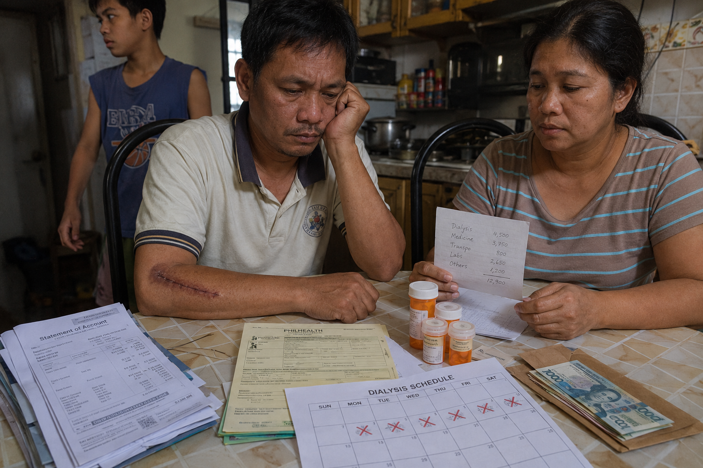
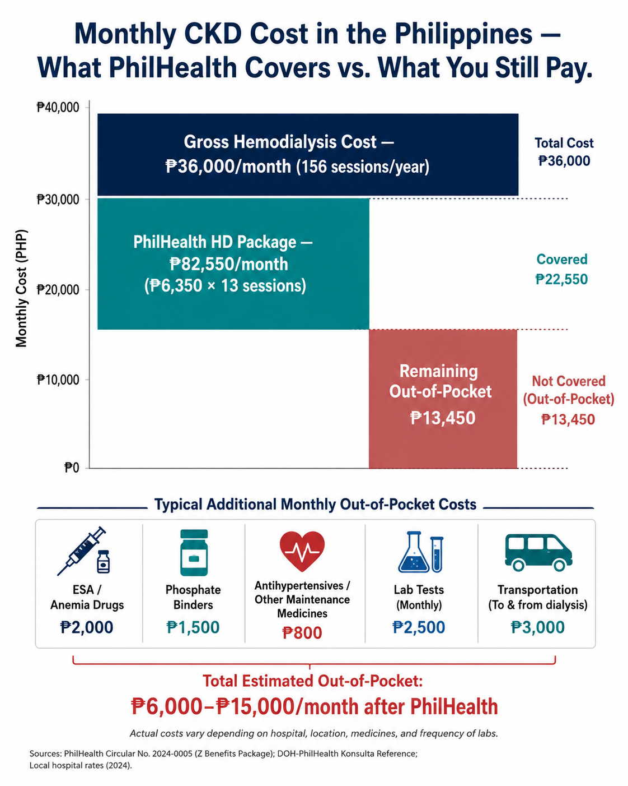
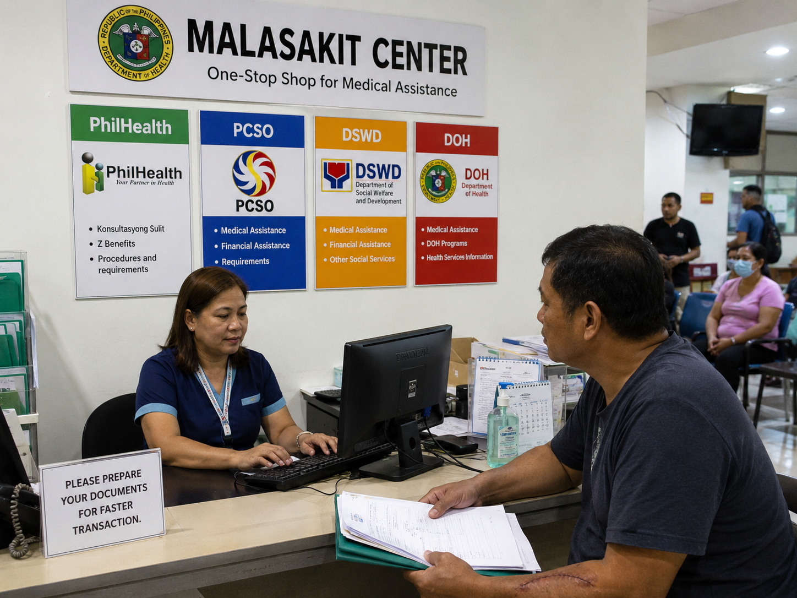
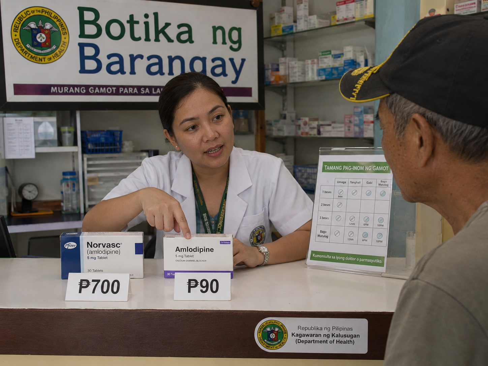
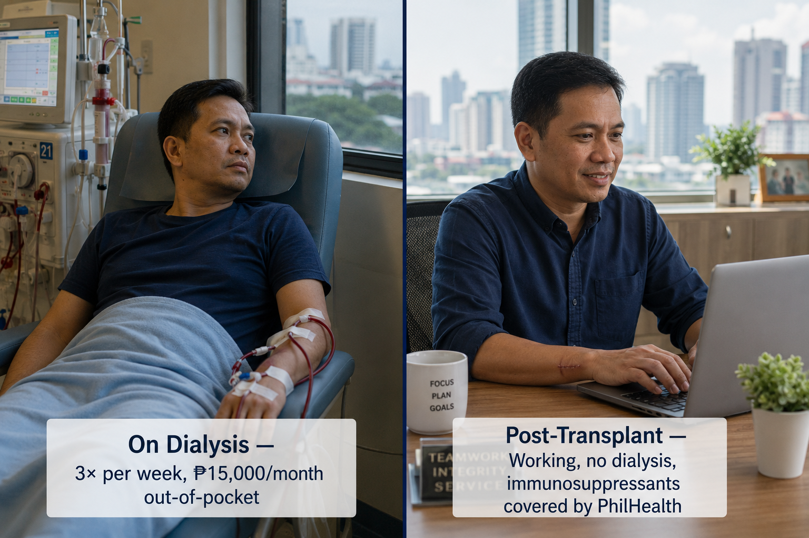

The Real Cost of CKD in the Philippines**Ing Tutu nang Gastos ning CKD keng Pilipinas** Ing Chronic Kidney Disease (CKD) e mu sakit ya ing katawan—magdala ya namang mabigat a karga keng bulsa da ring pamilya. Keng Pilipinas, ing gastos para keng dialysis, gamut, at pamamalak keng ospital malyari yang maubos ing alagâ na ning metung a pamilya. **Magkanu ing Dialysis?** Ing metung a session ning hemodialysis malyari yang magastos manibat ₱2,500 angga ₱4,500. Nung kailangan mung mag-dialysis atlung besis balang linggû, maabot ya ing gastos mu keng ₱36,000 angga ₱54,000 balang bulan. Para karing dakal a pamilyang Kapampangan, iti mas matas ya kesa keng bulung dang bayaran. **Aliwâ pang Gastos** Liban keng dialysis, atin mu pang bayaran a: - Gamut para keng presyon ning daya (antihypertensive medications) - Gamut para keng anemia - Pamamasyal papunta keng ospital o dialysis center - Laboratory tests at checkups - Special diet at supplements **Ing Karga keng Pamilya** Dakal a pamilya mipilitan lang maninda ning lugal, manigum utang, o tumigil magaral ding anak para mu makayagyu keng gastos. Ding ating sakit a CKD kadalasan e na la makapagobra, inya mabawasan ya ing pera a lungub keng bale. **Makananu Kang Makatulung king Sarili Mu?** Ing pangatimu na ning CKD keng early stage mas maura ya kesa keng dialysis. Paratang kang magpa-check up, uminum kang tamang gamut, at sunuran me ing meyabing kang doktor tungkul keng pamangan at pamibye-bye mu. Ang Tunay na Gastos ng CKD sa Pilipinas Ang Tinuod nga Gastos sa CKD sa Pilipinas
Financial stress is not a side effect of kidney disease — it is kidney disease, for most Filipino patients. The average hemodialysis patient spends ₱6,000–₱15,000 per month out-of-pocket even after PhilHealth. This guide maps every available resource in the country so you can reduce that burden systematically, not by accident.Ang pinansyal na stress ay hindi isang side effect ng sakit sa bato — ito ang sakit sa bato, para sa karamihang pasyenteng Pilipino. Ang karaniwang pasyenteng nasa hemodialysis ay gumagastos ng ₱6,000–₱15,000 bawat buwan na out-of-pocket kahit pagkatapos ng PhilHealth. Inilalagay ng gabay na ito ang bawat available na mapagkukunan sa bansa upang mabawasan ninyo ang pasaning iyon nang sistematiko, hindi sa pamamagitan ng tsansa.Ang pinansyal nga stress dili usa ka side effect sa sakit sa kidney — kini ang sakit sa kidney, alang sa kadaghanan sa mga pasyenteng Pilipino. Ang kasagaran nga pasyente sa hemodialysis nagagasto og ₱6,000–₱15,000 matag bulan nga out-of-pocket bisan pagkahuman sa PhilHealth. Kining giya nagmapa sa matag available nga kahinguhaan sa nasod aron makubus ninyo ang kana nga palas-anon nga sistematiko, dili sa kahigayonan. Ing pinansyal a stress ya ali metung a side effect ning sakit king batu — ini ing sakit king batu, para king karamihang pasyenteng Pilipino. Ing karaniwang pasyenteng nasa hemodialysis ya gumagastos ning ₱6,000–₱15,000 bawat bulan a out-of-pocket kahit kapabanuan ning PhilHealth. Inilalagay ning gabay a ini ing bawat available a mapagkukunan king bansa upang mabawasan ninyo ing pasaning iyun nang sistematiko, ali king pamamagitan ning tsansa.

What CKD Actually Costs — A Breakdown
| Cost Category | Typical Monthly Range | Notes |
|---|---|---|
| Hemodialysis sessions (12–13/month, 156/year) | ₱18,000–₱36,000 gross/month | PhilHealth covers ₱6,350/session × up to 156 sessions/year = ₱990,600/year (PC 2024-0023, effective Oct 7, 2024). Package includes facility, machine, dialyzer, anticoagulation, anemia drugs, IV solutions, supplies, and professional fees. No Balance Billing (NBB) policy applies at accredited centers — no co-pay for covered services. |
| Erythropoiesis-Stimulating Agent (ESA) | ₱1,500–₱4,000/month | epoetin alfa (Eposino) or darbepoetin. PhilHealth Z-benefit includes ESA for HD patients. Verify your package includes it. |
| IV iron sucrose (Ferrofer) | ₱500–₱1,200/month | Often included in HD session cost at some centers. Confirm with your unit. |
| Antihypertensives (2–4 agents) | ₱500–₱2,000/month | MDRP (Generics Act) and Botika ng Barangay significantly reduce this. Amlodipine, losartan available generic for <₱5/tablet. |
| Phosphate binders | ₱800–₱3,000/month | Calcium carbonate (generic) is cheapest. Sevelamer and lanthanum much more expensive — ask if calcium carbonate suffices. |
| Laboratory tests (monthly) | ₱1,500–₱3,500/month | CBC, creatinine, BUN, electrolytes, phosphorus, PTH, iron studies. PhilHealth may cover if filed under outpatient benefit. |
| Transportation to dialysis unit | ₱1,000–₱5,000/month | 3× weekly × 4 weeks. Major hidden cost for rural patients. DSWD SAP and LGU transport assist may help. |
| Nutritional supplements (if needed) | ₱500–₱2,000/month | Renal-specific formulas (Renalyte, Nepro). Not covered by PhilHealth. Food-based substitutes possible — ask your dietitian. |

Never Skip Dialysis or Medications to Save Money Without Telling Your Doctor FirstHuwag Kailanman Laktawan ang Dialysis o mga Gamot para Makatipid nang Hindi Muna Sinasabi sa Inyong DoktorAyaw Gayod Laktawan ang Dialysis o mga Tambal aron Makatipid nga Wala Muna Suginlan ang Imong Doktor Eka Kailanman Laktawan ing Dialysis o deng Gamut para Makatipid nang Ali Muna Sinasabi king Inyu Doktor
Missing dialysis sessions or stopping medications due to cost is one of the most common causes of preventable death and emergency hospitalization in Filipino CKD patients. If you cannot afford your next session or medication refill, call your dialysis unit or nephrologist before missing it. There are almost always options — but only if you ask. Silence costs lives.Ang pagpapalampas ng mga sesyon ng dialysis o paghihinto ng mga gamot dahil sa gastos ay isa sa pinaka-karaniwang sanhi ng maaaring maiwasang kamatayan at emergency na pag-ospital sa mga pasyenteng Pilipino na may CKD. Kung hindi ninyo kaya ang inyong susunod na sesyon o refill ng gamot, tumawag sa inyong dialysis unit o nephrologist bago ito mapalampas. Halos palaging may mga pagpipilian — ngunit kung hihilingin lamang ninyo. Ang katahimikan ay nagkakahalaga ng buhay.Ang pagpalipas sa mga sesyon sa dialysis o paghunong sa mga tambal tungod sa gastos usa sa labing kasagaran nga hinungdan sa mapugngang kamatayon ug emergency nga pag-ospital sa mga pasyenteng Pilipino nga adunay CKD. Kung dili ninyo kaya ang imong sunod nga sesyon o refill sa tambal, tawag sa imong dialysis unit o nephrologist sa wala pa malipas kini. Halos kanunay adunay mga pagpipilian — apan kung mangayo lamang kamo. Ang kahilom nagkantidad og kinabuhi. Ing pagpapalampas ning deng sesyon ning dialysis o paghihinto ning deng gamut dahil king gastos ya metung king pinaka-karaniwang sanhi ning maaaring maiwasang kamatayan at emergency a pag-ospital king deng pasyenteng Pilipino a atin CKD. Nung ali ninyo kaya ing inyu susunod a sesyon o refill ning gamut, tumawag king inyu dialysis unit o nephrologist bago ini mapalampas. Halos papirming atin deng pagpipilian — ngarud nung hihilingin lamang ninyo. Ing katahimikan ya nagkakahalaga ning biye.
Maximizing Your PhilHealth BenefitsPapakit-lapu ing Kekang PhilHealth Benefits Pagiging Ganap ng Inyong mga Benepisyo sa PhilHealth Pagpadako sa Imong mga Benepisyo sa PhilHealth
PhilHealth offers several benefit packages relevant to CKD. Most patients are enrolled in only one — but you may qualify for more. Knowing all applicable packages and filing correctly can reduce out-of-pocket costs by 40–70%.Nag-aalok ang PhilHealth ng ilang benefit package na may kaugnayan sa CKD. Karamihang pasyente ay nakarehistro lamang sa isa — ngunit maaari kayong maging karapat-dapat sa higit pa. Ang pagkaalam ng lahat ng naaangkop na pakete at tamang pag-file ay maaaring magpababa ng out-of-pocket na gastos ng 40–70%.Ang PhilHealth nagtanyag og daghang benefit package nga may kalabtan sa CKD. Kadaghanan sa mga pasyente naka-enroll lamang sa usa — apan mahimong kwalipikado kamo alang sa dugang. Ang paghibalo sa tanan nga angay nga pakete ug husto nga pag-file makapakubos sa out-of-pocket nga gastos og 40–70%. Nag-aalok ing PhilHealth ning ilang benefit package a atin kaugnayan king CKD. Karamihang pasyente ya nakarehistro lamang king metung — ngarud maaari kayung maging karapat-dapat king higit pa. Ing pagkaalam ning amin ning naaangkop a pakete at tamang pag-file ya maaaring magpababa ning out-of-pocket a gastos ning 40–70%.
Z-Benefit Package — HemodialysisZ-Benefit Package — HemodialysisZ-Benefit Package — Hemodialysis Z-Benefit Package — Hemodialysis
Under PC 2024-0023 (effective October 7, 2024 — Revision 2): covers up to 156 HD sessions per year at ₱6,350/session — a total annual package of ₱990,600. The package includes facility and machine use, dialyzer, hemodialysis solutions, dialysis kit per session, anticoagulation medications, anemia management drugs and IV iron, and professional fees. The No Balance Billing (NBB) policy applies — accredited centers cannot charge co-payments for covered services. Requires registration in the PhilHealth Dialysis Database (PDD). File through your dialysis unit's Medical Social Worker.Sa ilalim ng PC 2024-0023 (epektibo noong Oktubre 7, 2024 — Revision 2): sumasaklaw sa hanggang 156 sesyon ng HD bawat taon sa ₱6,350/sesyon — isang kabuuang taunang pakete ng ₱990,600. Kasama sa pakete ang paggamit ng pasilidad at makina, dialyzer, mga solusyon sa hemodialysis, dialysis kit bawat sesyon, mga gamot para sa anticoagulation, mga gamot para sa pamamahala ng anemia at IV iron, at mga propesyonal na bayad. Ang No Balance Billing (NBB) policy ay naaangkop — ang mga accredited na center ay hindi maaaring mangolekta ng co-payment para sa mga saklaw na serbisyo. Nangangailangan ng pagpaparehistro sa PhilHealth Dialysis Database (PDD). I-file sa pamamagitan ng Medical Social Worker ng inyong dialysis unit.Sa ilalim sa PC 2024-0023 (epektibo Oktubre 7, 2024 — Revision 2): nasaklaw hangtod sa 156 sesyon sa HD matag tuig sa ₱6,350/sesyon — usa ka tibuok taunang pakete nga ₱990,600. Ang pakete naglakip sa paggamit sa pasilidad ug makina, dialyzer, mga solusyon sa hemodialysis, dialysis kit matag sesyon, mga tambal alang sa anticoagulation, mga tambal alang sa pagdumala sa anemia ug IV iron, ug mga propesyonal nga bayad. Ang No Balance Billing (NBB) policy naaangkop — ang mga accredited nga center dili makapangolekta og co-payment alang sa mga nasaklaw nga serbisyo. Nagkinahanglan og pagparehistro sa PhilHealth Dialysis Database (PDD). I-file pinaagi sa Medical Social Worker sa imong dialysis unit. King ilalim ning PC 2024-0023 (epektibo noong Oktubre 7, 2024 — Revision 2): sumasaklaw king anggang 156 sesyon ning HD bawat banua king ₱6,350/sesyon — metung a kabuuang taunang pakete ning ₱990,600. Kasama king pakete ing paggamit ning pasilidad at makina, dialyzer, deng solusyon king hemodialysis, dialysis kit bawat sesyon, deng gamut para king anticoagulation, deng gamut para king pamamahala ning anemia at IV iron, at deng propesyonal a bayad. Ing No Balance Billing (NBB) policy ya naaangkop — ing deng accredited a center ya ali maaaring mangolekta ning co-payment para king deng saklaw a serbisyo. Nangangailangan ning pagpaparehistro king PhilHealth Dialysis Database (PDD). I-file king pamamagitan ning Medical Social Worker ning inyu dialysis unit.
Z-Benefit Package — Peritoneal Dialysis (PC 2024-0036)Z-Benefit Package — Peritoneal Dialysis (PC 2024-0036)Z-Benefit Package — Peritoneal Dialysis (PC 2024-0036) Z-Benefit Package — Peritoneal Dialysis (PC 2024-0036)
Rates updated January 2025 — adult CAPD now covers ₱389,640–₱510,140/year depending on daily solution volume (up from old flat ₱270,000). Pediatric APD reaches ₱1,270,000/year. Includes PD consumables, solutions, catheter insertion, exit site infection prevention, and peritonitis management. Often significantly more cost-effective than HD. Ask your nephrologist if you are a PD candidate.Na-update ang mga rate noong Enero 2025 — ang adult CAPD ay sumasaklaw na ng ₱389,640–₱510,140/taon depende sa dami ng solusyon bawat araw (mula sa lumang flat na ₱270,000). Ang pediatric APD ay umaabot sa ₱1,270,000/taon. Kasama ang mga PD consumable, solusyon, pagpasok ng catheter, pag-iwas sa impeksyon sa exit site, at pamamahala ng peritonitis. Kadalasang mas cost-effective kaysa HD. Tanungin ang inyong nephrologist kung kayo ay PD candidate.Na-update ang mga rate Enero 2025 — ang adult CAPD nasaklaw na og ₱389,640–₱510,140/tuig depende sa dami sa solusyon matag adlaw (gikan sa daan nga flat nga ₱270,000). Ang pediatric APD miabot sa ₱1,270,000/tuig. Naglakip sa mga PD consumable, solusyon, pagsal-ot sa catheter, pag-iwas sa impeksyon sa exit site, ug pagdumala sa peritonitis. Kasagaran mas cost-effective kaysa HD. Pangutan-a ang imong nephrologist kung kamo PD candidate. A-update ing deng rate noong Enero 2025 — ing adult CAPD ya sumasaklaw a ning ₱389,640–₱510,140/banua depende king dami ning solusyon bawat aldo (mula king lumang flat a ₱270,000). Ing pediatric APD ya umaabot king ₱1,270,000/banua. Kasama ing deng PD consumable, solusyon, pagpasok ning catheter, pag-iwas king impeksyon king exit site, at pamamahala ning peritonitis. Kadalasang mas cost-effective kaysa HD. Tanungin ing inyu nephrologist nung kayu ya PD candidate.
Z-Benefit Package — Kidney Transplant (PC 2024-0035)Z-Benefit Package — Kidney Transplant (PC 2024-0035)Z-Benefit Package — Kidney Transplant (PC 2024-0035) Z-Benefit Package — Kidney Transplant (PC 2024-0035)
Rates updated January 2025 — now differentiated by donor type and induction agent: Living donor, laparoscopic: ₱993,000 · Living donor, open: ₱865,000 · Deceased donor with machine perfusion: ₱2,093,000–₱2,146,000. Covers pre-transplant workup, surgery (recipient and donor), induction immunosuppression, and initial post-operative hospitalization. Requires PhilHealth-accredited transplant center (24 nationwide). Pre-authorization required — valid 180 days.Na-update ang mga rate noong Enero 2025 — ngayon ay naiiba-iba ayon sa uri ng donor at induction agent: Living donor, laparoscopic: ₱993,000 · Living donor, bukas: ₱865,000 · Deceased donor na may machine perfusion: ₱2,093,000–₱2,146,000. Sumasaklaw sa pre-transplant workup, operasyon (tatanggap at donor), induction immunosuppression, at paunang post-operative na pag-ospital. Nangangailangan ng PhilHealth-accredited na transplant center (24 sa buong bansa). Kailangan ng pre-authorization — may bisa nang 180 araw.Na-update ang mga rate Enero 2025 — karon nagkalain-lain ayon sa klase sa donor ug induction agent: Living donor, laparoscopic: ₱993,000 · Living donor, bukas: ₱865,000 · Deceased donor nga adunay machine perfusion: ₱2,093,000–₱2,146,000. Nasaklaw ang pre-transplant workup, operasyon (magdadawat ug donor), induction immunosuppression, ug unang post-operative nga pag-ospital. Nagkinahanglan og PhilHealth-accredited nga transplant center (24 sa tibuok nasod). Kinahanglan ang pre-authorization — balido sulod sa 180 ka adlaw. A-update ing deng rate noong Enero 2025 — ngayon ya naiiba-iba ayon king uri ning donor at induction agent: Living donor, laparoscopic: ₱993,000 · Living donor, bukas: ₱865,000 · Deceased donor a atin machine perfusion: ₱2,093,000–₱2,146,000. Sumasaklaw king pre-transplant workup, operasyon (tatanggap at donor), induction immunosuppression, at paunang post-operative a pag-ospital. Nangangailangan ning PhilHealth-accredited a transplant center (24 king buong bansa). Kailangan ning pre-authorization — atin bisa nang 180 aldo.
Z-Benefit Package — Post-Kidney Transplant (PC 2025-0012)Z-Benefit Package — Post-Kidney Transplant (PC 2025-0012)Z-Benefit Package — Post-Kidney Transplant (PC 2025-0012) Z-Benefit Package — Post-Kidney Transplant (PC 2025-0012) NEW Jul 2025
The landmark Post-KT package now covers what was previously the biggest barrier — lifelong immunosuppressants: ₱40,725/month (adult) for tacrolimus, mycophenolate, prednisone. Also covers drug level monitoring (up to 10×/year in Year 1), quarterly labs, annual graft biopsy (₱77,000), graft Doppler, and INH prophylaxis. Available at 5 adult-accredited centers: NKTI, PGH, Baguio General Hospital, Bicol Medical Center, Davao Doctors Hospital. Apply through your transplant center's Z Benefits Coordinator after discharge.Ang makasaysayang Post-KT package ay sumasaklaw na ngayon sa dati ang pinakamalaking hadlang — panghabambuhay na immunosuppressant: ₱40,725/buwan (matanda) para sa tacrolimus, mycophenolate, prednisone. Sumasaklaw din sa drug level monitoring (hanggang 10×/taon sa Taon 1), quarterly labs, taunang graft biopsy (₱77,000), graft Doppler, at INH prophylaxis. Available sa 5 adult-accredited na center: NKTI, PGH, Baguio General Hospital, Bicol Medical Center, Davao Doctors Hospital. Mag-apply sa pamamagitan ng Z Benefits Coordinator ng inyong transplant center pagkatapos ng discharge.Ang makasaysayang Post-KT package nasaklaw na karon ang dati ang pinakadakog babag — pangtibuok kinabuhi nga immunosuppressant: ₱40,725/bulan (hamtong) alang sa tacrolimus, mycophenolate, prednisone. Nasaklaw usab ang drug level monitoring (hangtod 10×/tuig sa Tuig 1), quarterly labs, taunang graft biopsy (₱77,000), graft Doppler, ug INH prophylaxis. Available sa 5 adult-accredited nga center: NKTI, PGH, Baguio General Hospital, Bicol Medical Center, Davao Doctors Hospital. Mag-apply pinaagi sa Z Benefits Coordinator sa imong transplant center pagkahuman sa discharge. Ing makasaysayang Post-KT package ya sumasaklaw a ngayon king dati ing pinakamalaking hadlang — panghabambuhay a immunosuppressant: ₱40,725/bulan (matanda) para king tacrolimus, mycophenolate, prednisone. Sumasaklaw din king drug level monitoring (anggang 10×/banua king Banua 1), quarterly labs, taunang graft biopsy (₱77,000), graft Doppler, at INH prophylaxis. Available king 5 adult-accredited a center: NKTI, PGH, Baguio General Hospital, Bicol Medical Center, Davao Doctors Hospital. Mag-apply king pamamagitan ning Z Benefits Coordinator ning inyu transplant center kapabanuan ning discharge.
Outpatient Benefit (OPB)Outpatient Benefit (OPB)Outpatient Benefit (OPB) Outpatient Benefit (OPB)
Up to ₱15,000/year for outpatient consultations, labs, and medicines at PhilHealth-accredited clinics. Covers CKD medications if properly coded. Requires i-ConsultMD or accredited primary care provider.Hanggang ₱15,000/taon para sa mga outpatient na konsultasyon, lab, at gamot sa mga PhilHealth-accredited na klinika. Sumasaklaw sa mga gamot para sa CKD kung may tamang code. Nangangailangan ng i-ConsultMD o accredited na primary care provider.Hangtod ₱15,000/tuig alang sa mga outpatient nga konsultasyon, lab, ug mga tambal sa mga PhilHealth-accredited nga klinika. Nasaklaw ang mga tambal alang sa CKD kung may husto nga code. Nagkinahanglan og i-ConsultMD o accredited nga primary care provider. Anggang ₱15,000/banua para king deng outpatient a konsultasyon, lab, at gamut king deng PhilHealth-accredited a klinika. Sumasaklaw king deng gamut para king CKD nung atin tamang code. Nangangailangan ning i-ConsultMD o accredited a primary care provider.
All Case Rate (ACR) — AKI & InpatientAll Case Rate (ACR) — AKI at InpatientAll Case Rate (ACR) — AKI ug Inpatient All Case Rate (ACR) — AKI at Inpatient
For hospital admissions due to AKI or CKD complications, ACR covers a fixed case rate. Ensure your admitting physician files the correct ICD-10 code (N17–N19 for AKI/CKD) and that your hospital is accredited.Para sa mga pag-ospital dahil sa AKI o mga komplikasyon ng CKD, ang ACR ay sumasaklaw sa isang nakapirming case rate. Siguraduhing ang inyong admitting physician ay nag-file ng tamang ICD-10 code (N17–N19 para sa AKI/CKD) at na ang inyong ospital ay accredited.Alang sa mga pag-ospital tungod sa AKI o mga komplikasyon sa CKD, ang ACR nasaklaw sa usa ka naayo nga case rate. Siguraduha nga ang imong admitting physician nag-file sa husto nga ICD-10 code (N17–N19 alang sa AKI/CKD) ug nga ang imong ospital accredited. Para king deng pag-ospital dahil king AKI o deng komplikasyon ning CKD, ing ACR ya sumasaklaw king metung a nakapirming case rate. Siguraduhing ing inyu admitting physician ya nag-file ning tamang ICD-10 code (N17–N19 para king AKI/CKD) at a ing inyu ospital ya accredited.
Sponsored / Indigent Member ProgramPrograma para sa Sponsored / Indigent MemberPrograma alang sa Sponsored / Indigent Member Programa para king Sponsored / Indigent Member
Patients who cannot afford contributions may be enrolled as Indigent Members through their LGU. PhilHealth premiums are waived. DSWD 4Ps beneficiaries are automatically enrolled. Barangay Indigency Certificate required.Ang mga pasyenteng hindi kayang bayaran ang mga kontribusyon ay maaaring irehistro bilang Indigent Members sa pamamagitan ng kanilang LGU. Ang mga premium ng PhilHealth ay ibinabalewala. Ang mga benepisyaryo ng DSWD 4Ps ay awtomatikong nairehistro. Kailangan ang Barangay Indigency Certificate.Ang mga pasyente nga dili makabayad sa mga kontribusyon mahimong i-enroll isip Indigent Members pinaagi sa ilang LGU. Ang mga premium sa PhilHealth gi-waive. Ang mga benepisyaryo sa DSWD 4Ps awtomatikong na-enroll. Kinahanglan ang Barangay Indigency Certificate. Ing deng pasyenteng ali kayang bayaran ing deng kontribusyon ya maaaring irehistro bilang Indigent Members king pamamagitan ning kanilang LGU. Ing deng premium ning PhilHealth ya ibinabalewala. Ing deng benepisyaryo ning DSWD 4Ps ya awtomatikong nairehistro. Kailangan ing Barangay Indigency Certificate.
Critical PhilHealth Filing Tips — Avoid Claim DenialsMahahalagang Tip sa Pag-file ng PhilHealth — Iwasan ang Pagtanggi sa ClaimKritikal nga mga Tip sa Pag-file sa PhilHealth — Likayi ang Pagtanggong sa Claim Mahahalagang Tip king Pag-file ning PhilHealth — Iwasan ing Pagtanggi king Claim
- Ensure your PhilHealth number is active and contributions are current before admission or the start of any Z-benefit package. Lapses in membership cause claim denials.Siguraduhing aktibo ang inyong PhilHealth number at kasalukuyan ang mga kontribusyon bago mag-ospital o magsimula ng anumang Z-benefit package. Ang mga pagkakagambala sa membership ay nagdudulot ng pagtanggi sa claim.Siguraduha nga aktibo ang imong PhilHealth number ug karon ang mga kontribusyon sa wala pa mag-ospital o magsugod sa bisan unsang Z-benefit package. Ang mga pagkaguba sa membership nagdulot og pagtanggong sa claim. Siguraduhing aktibo ing inyu PhilHealth number at kasalukuyan ing deng kontribusyon bago mag-ospital o magsimula ning anumang Z-benefit package. Ing deng pagkakagambala king membership ya nagdudulot ning pagtanggi king claim.
- Your dialysis unit's Medical Social Worker (MSW) handles Z-benefit enrollment — visit them before your first covered session, not after.Ang Medical Social Worker (MSW) ng inyong dialysis unit ang nangangasiwa ng Z-benefit enrollment — bisitahin sila bago ang inyong unang saklaw na sesyon, hindi pagkatapos.Ang Medical Social Worker (MSW) sa imong dialysis unit ang nagdumala sa Z-benefit enrollment — bisitahan sila sa wala pa ang imong unang nasaklaw nga sesyon, dili pagkahuman. Ing Medical Social Worker (MSW) ning inyu dialysis unit ing nangangasiwa ning Z-benefit enrollment — bisitahin sila bago ing inyu unang saklaw a sesyon, ali kapabanuan.
- Always request a Statement of Account (SOA) after every dialysis session and verify the PhilHealth deduction was applied. Errors are common and usually correctable within 90 days.Laging humiling ng Statement of Account (SOA) pagkatapos ng bawat sesyon ng dialysis at i-verify na inilapat ang bawas ng PhilHealth. Ang mga pagkakamali ay karaniwan at karaniwang maaaring itama sa loob ng 90 araw.Kanunay mangayo og Statement of Account (SOA) pagkahuman sa matag sesyon sa dialysis ug i-verify nga gipadapat ang bawas sa PhilHealth. Ang mga sayop kasagaran ug kasagarang maitama sulod sa 90 ka adlaw. Pirming humiling ning Statement of Account (SOA) kapabanuan ning bawat sesyon ning dialysis at i-verify a inilapat ing bawas ning PhilHealth. Ing deng pagkakamali ya karaniwan at karaniwang maaaring itama king loob ning 90 aldo.
- For OPB, ensure your physician uses the correct ICD-10 code and files electronically via the PhilHealth eClaimMD system. Manual filing delays reimbursement by weeks.Para sa OPB, siguraduhing ginagamit ng inyong doktor ang tamang ICD-10 code at nag-fi-file nang elektroniko sa pamamagitan ng PhilHealth eClaimMD system. Ang manual na pag-file ay nagpapahuli ng reimbursement ng ilang linggo.Alang sa OPB, siguraduha nga gigamit sa imong doktor ang husto nga ICD-10 code ug nag-fi-file nga elektroniko pinaagi sa PhilHealth eClaimMD system. Ang manual nga pag-file nagpalangan sa reimbursement og mga semana. Para king OPB, siguraduhing ginagamit ning inyu doktor ing tamang ICD-10 code at nag-fi-file nang elektroniko king pamamagitan ning PhilHealth eClaimMD system. Ing manual a pag-file ya nagpapahuli ning reimbursement ning ilang lutu.
- The PhilHealth Member Portal (www.philhealth.gov.ph) lets you check your benefit balance, contributions, and claim status online for free.Ang PhilHealth Member Portal (www.philhealth.gov.ph) ay nagpapahintulot sa inyo na suriin ang inyong benefit balance, mga kontribusyon, at katayuan ng claim online nang libre.Ang PhilHealth Member Portal (www.philhealth.gov.ph) nagpahintulot kaninyo nga susihon ang imong benefit balance, mga kontribusyon, ug estado sa claim online nga libre. Ing PhilHealth Member Portal (www.philhealth.gov.ph) ya nagpapahintulot king inyo a suriin ing inyu benefit balance, deng kontribusyon, at katayuan ning claim online nang libre.
DSWD, PCSO & Other Government Assistance# DSWD, PCSO & Aliwa Pang Tulong Ning Gobyerno Atin la ding aliwang ahensya ning gobyerno a malyaring maki-ayuda kekayu para king gastos yu king ospital ampong medisina. **DSWD (Department of Social Welfare and Development)** Ing DSWD malyari yang magbie ayuda finansyal karing pasyenteng mangailangan lalu na karing atin mababang kita. Malyari kayung mag-apply king DSWD office king balen yu o karing social worker king ospital. **PCSO (Philippine Charity Sweepstakes Office)** Ing PCSO atin yang programa para king medical assistance. Malyari la kayung tulungan king gastos para king: - Operasyon - Chemotherapy - Dialysis - Medisina - Aliwa pang medical procedure **Makananu Ing Pag-apply:** 1. Munta kayu king PCSO office o karing partner hospital da 2. Magdala kayung kumpletu documents anti ing: - Medical certificate o clinical abstract - Hospital bill o quotation - Valid ID - Barangay certificate 3. Mag-fill out kayu ning application form **Aliwa Pang Government Programs:** - **PhilHealth** - Siguraduwan yung active ing membership yu - **Malasakit Center** - One-stop shop para king medical assistance karing gobyerno ospital - **DOH Medical Assistance Program** - Para king mga mangailangan pang karagdagang tulong Paki-konsulta la ding social worker king ospital para king guidance kung sanu la ding programa a malyari yung pag-applyan. DSWD, PCSO at Iba Pang Tulong ng Pamahalaan DSWD, PCSO ug Ubang Tabang sa Gobyerno
DSWD — Medical Assistance Program (MAP)DSWD — Medical Assistance Program (MAP)DSWD — Medical Assistance Program (MAP) DSWD — Medical Assistance Program (MAP)
The Department of Social Welfare and Development provides one-time or recurring medical cash assistance for indigent patients. CKD patients can apply at the DSWD Field Office in their region. Requires: Social Case Study Report (from DSWD social worker), medical certificate from nephrologist, hospital billing statement, valid ID. Processing time: 3–10 working days. Amount: typically ₱3,000–₱20,000 per application depending on need assessment.Ang Department of Social Welfare and Development ay nagbibigay ng isang beses o paulit-ulit na medikal na tulong sa pera para sa mga pasyenteng walang kakayahan. Ang mga pasyenteng may CKD ay maaaring mag-apply sa DSWD Field Office sa kanilang rehiyon. Kailangan: Social Case Study Report (mula sa DSWD social worker), medikal na sertipiko mula sa nephrologist, billing statement ng ospital, valid ID. Oras ng pagproseso: 3–10 araw na trabaho. Halaga: karaniwang ₱3,000–₱20,000 bawat aplikasyon depende sa pagtatasa ng pangangailangan.Ang Department of Social Welfare and Development naghatag og usa ka beses o paulit-ulit nga medikal nga tulong sa kwarta alang sa mga pasyenteng wala'y kakayahan. Ang mga pasyente nga adunay CKD mahimong mag-apply sa DSWD Field Office sa ilang rehiyon. Kinahanglan: Social Case Study Report (gikan sa DSWD social worker), medikal nga sertipiko gikan sa nephrologist, billing statement sa ospital, valid ID. Oras sa pagproseso: 3–10 ka adlaw nga trabaho. Kantidad: kasagarang ₱3,000–₱20,000 matag aplikasyon depende sa pagsusi sa pangangailangan. Ing Department of Social Welfare and Development ya nagbibigay ning metung a beses o paulit-ulit a medikal a tulong king pera para king deng pasyenteng alang kakayahan. Ing deng pasyenteng atin CKD ya maaaring mag-apply king DSWD Field Office king kanilang rehiyun. Kailangan: Social Case Study Report (mula king DSWD social worker), medikal a sertipiko mula king nephrologist, billing statement ning ospital, valid ID. Oras ning pagproseso: 3–10 aldo a obran. Halaga: karaniwang ₱3,000–₱20,000 bawat aplikasyon depende king pagtatasa ning pangangailangan.
PCSO — Individual Medical Assistance Program (IMAP)PCSO — Individual Medical Assistance Program (IMAP)PCSO — Individual Medical Assistance Program (IMAP) PCSO — Individual Medical Assistance Program (IMAP)
The Philippine Charity Sweepstakes Office provides medical financial assistance through IMAP. CKD patients can apply at any PCSO Main Office or Branch. Requirements: recent doctor's prescription or medical abstract, cost estimate or official receipt, PCSO IMAP form, valid government ID, and barangay indigency certificate. Amount: up to ₱50,000 per year depending on medical need. Walk-in applications processed daily.Ang Philippine Charity Sweepstakes Office ay nagbibigay ng medikal na tulong sa panalapi sa pamamagitan ng IMAP. Ang mga pasyenteng may CKD ay maaaring mag-apply sa anumang PCSO Main Office o Branch. Mga kinakailangan: kamakailang reseta ng doktor o medikal na abstract, cost estimate o opisyal na resibo, PCSO IMAP form, valid government ID, at barangay indigency certificate. Halaga: hanggang ₱50,000 bawat taon depende sa medikal na pangangailangan. Ang mga walk-in na aplikasyon ay pinoproseso araw-araw.Ang Philippine Charity Sweepstakes Office naghatag og medikal nga tulong sa panalapi pinaagi sa IMAP. Ang mga pasyente nga adunay CKD mahimong mag-apply sa bisan unsang PCSO Main Office o Branch. Mga kinahanglanon: bag-ohong reseta sa doktor o medikal nga abstract, cost estimate o opisyal nga resibo, PCSO IMAP form, valid government ID, ug barangay indigency certificate. Kantidad: hangtod ₱50,000 matag tuig depende sa medikal nga pangangailangan. Ang mga walk-in nga aplikasyon giproseso matag adlaw. Ing Philippine Charity Sweepstakes Office ya nagbibigay ning medikal a tulong king panalapi king pamamagitan ning IMAP. Ing deng pasyenteng atin CKD ya maaaring mag-apply king anumang PCSO Main Office o Branch. Deng kinakailangan: kamakailang reseta ning doktor o medikal a abstract, cost estimate o opisyal a resibo, PCSO IMAP form, valid government ID, at barangay indigency certificate. Halaga: anggang ₱50,000 bawat banua depende king medikal a pangangailangan. Ing deng walk-in a aplikasyon ya pinoproseso aldo-aldo.
PCSO Medical Assistance — How to ApplyPCSO Medical Assistance — Paano Mag-applyPCSO Medical Assistance — Unsaon Pag-apply PCSO Medical Assistance — Paano Mag-apply
Visit any PCSO branch (Quezon City: PCSO Main Office, Shaw Blvd, Mandaluyong). Bring: physician's prescription/medical abstract, cost estimate from pharmacy or dialysis center, barangay certificate of indigency, and one valid ID. Fill out the IMAP form on-site. Same-day processing for urgent cases. Apply repeatedly for each new expenditure — there is no annual limit on applications per se, though the annual cap is ₱50,000.Bumisita sa anumang PCSO branch (Quezon City: PCSO Main Office, Shaw Blvd, Mandaluyong). Magdala ng: reseta/medikal na abstract ng doktor, cost estimate mula sa parmasya o dialysis center, barangay certificate of indigency, at isang valid ID. Punan ang IMAP form sa lugar. Same-day na pagproseso para sa mga urgent na kaso. Mag-apply nang paulit-ulit para sa bawat bagong gastos — walang taunang limitasyon sa mga aplikasyon per se, bagaman ang taunang cap ay ₱50,000.Bisitahan ang bisan unsang PCSO branch (Quezon City: PCSO Main Office, Shaw Blvd, Mandaluyong). Dad-a: reseta/medikal nga abstract sa doktor, cost estimate gikan sa parmasya o dialysis center, barangay certificate of indigency, ug usa ka valid ID. Pun-on ang IMAP form sa lugar. Same-day nga pagproseso alang sa mga urgent nga kaso. Mag-apply nga paulit-ulit alang sa matag bag-ong gastos — walay taunang limitasyon sa mga aplikasyon per se, bisan ang taunang cap ₱50,000. Bumisita king anumang PCSO branch (Quezon City: PCSO Main Office, Shaw Blvd, Mandaluyong). Magdala ning: reseta/medikal a abstract ning doktor, cost estimate mula king parmasya o dialysis center, barangay certificate of indigency, at metung a valid ID. Punan ing IMAP form king lugar. Same-day a pagproseso para king deng urgent a kaso. Mag-apply nang paulit-ulit para king bawat bagong gastos — alang taunang limitasyon king deng aplikasyon per se, bagaman ing taunang cap ya ₱50,000.
DSWD Social Amelioration — 4Ps & SAPDSWD Social Amelioration — 4Ps at SAPDSWD Social Amelioration — 4Ps ug SAP DSWD Social Amelioration — 4Ps at SAP
If you are enrolled in the Pantawid Pamilyang Pilipino Program (4Ps), you receive automatic PhilHealth enrollment and a monthly cash grant. Non-4Ps indigent patients can apply for the Social Amelioration Program (SAP) at their barangay. CKD patients with no income may qualify for emergency subsidy during treatment crisis periods.Kung kayo ay nakalista sa Pantawid Pamilyang Pilipino Program (4Ps), makakatanggap kayo ng awtomatikong enrollment sa PhilHealth at buwanang cash grant. Ang mga pasyenteng walang kakayahan na hindi 4Ps ay maaaring mag-apply para sa Social Amelioration Program (SAP) sa kanilang barangay. Ang mga pasyenteng may CKD na walang kita ay maaaring maging karapat-dapat para sa emergency subsidy sa panahon ng krisis sa paggamot.Kung kamo naka-enroll sa Pantawid Pamilyang Pilipino Program (4Ps), makadawat kamo og awtomatikong enrollment sa PhilHealth ug binuwanang cash grant. Ang mga pasyenteng wala'y kakayahan nga dili 4Ps mahimong mag-apply alang sa Social Amelioration Program (SAP) sa ilang barangay. Ang mga pasyente nga adunay CKD nga walay kita mahimong kwalipikado alang sa emergency subsidy sa panahon sa krisis sa pagtambal. Nung kayu ya nakalista king Pantawid Pamilyang Pilipino Program (4Ps), makakatanggap kayu ning awtomatikong enrollment king PhilHealth at buwanang cash grant. Ing deng pasyenteng alang kakayahan a ali 4Ps ya maaaring mag-apply para king Social Amelioration Program (SAP) king kanilang barangay. Ing deng pasyenteng atin CKD a alang kita ya maaaring maging karapat-dapat para king emergency subsidy king panahon ning krisis king paggamut.
DOH Medical Assistance for Indigent Patients (MAIP)DOH Medical Assistance para sa Indigent Patients (MAIP)DOH Medical Assistance alang sa Indigent Patients (MAIP) DOH Medical Assistance para king Indigent Patients (MAIP)
The DOH-MAIP provides financial assistance through DOH-retained hospitals and centers. Apply at the Medical Social Services department of any DOH hospital (NKTI, PGH, EAMC, JRRMMC, etc.). The DOH also runs the Malasakit Center inside most government hospitals — a one-stop shop combining PhilHealth, PCSO, DSWD, and DOH assistance in a single application process. Look for the Malasakit Center desk at your hospital.Ang DOH-MAIP ay nagbibigay ng tulong sa panalapi sa pamamagitan ng mga ospital at center na pinananatili ng DOH. Mag-apply sa departamento ng Medical Social Services ng anumang ospital ng DOH (NKTI, PGH, EAMC, JRRMMC, atbp.). Pinapatakbo rin ng DOH ang Malasakit Center sa loob ng karamihang ospital ng gobyerno — isang one-stop shop na pinagsama ang tulong ng PhilHealth, PCSO, DSWD, at DOH sa isang proseso ng aplikasyon. Hanapin ang Malasakit Center desk sa inyong ospital.Ang DOH-MAIP naghatag og tulong sa panalapi pinaagi sa mga ospital ug center nga gipadayon sa DOH. Mag-apply sa departamento sa Medical Social Services sa bisan unsang ospital sa DOH (NKTI, PGH, EAMC, JRRMMC, ug uban pa). Gipadagan usab sa DOH ang Malasakit Center sulod sa kadaghanan sa mga ospital sa gobyerno — usa ka one-stop shop nga naghiusa sa tulong sa PhilHealth, PCSO, DSWD, ug DOH sa usa ka proseso sa aplikasyon. Pangitaa ang Malasakit Center desk sa imong ospital. Ing DOH-MAIP ya nagbibigay ning tulong king panalapi king pamamagitan ning deng ospital at center a pinananatili ning DOH. Mag-apply king departamento ning Medical Social Services ning anumang ospital ning DOH (NKTI, PGH, EAMC, JRRMMC, atbp.). Pinapatakbo rin ning DOH ing Malasakit Center king loob ning karamihang ospital ning gobyerno — metung a one-stop shop a pinagsama ing tulong ning PhilHealth, PCSO, DSWD, at DOH king metung a proseso ning aplikasyon. Hanapin ing Malasakit Center desk king inyu ospital.
The Malasakit Center — One Application, Multiple BenefitsAng Malasakit Center — Isang Aplikasyon, Maraming BenepisyoAng Malasakit Center — Usa ka Aplikasyon, Daghang Benepisyo Ing Malasakit Center — Metung a Aplikasyon, Dacal a Benepisyo
Established under RA 11463, the Malasakit Center is located inside DOH-retained and specialty hospitals. A single application processes your eligibility for PhilHealth, PCSO-IMAP, DSWD-MAP, and DOH-MAIP simultaneously. For CKD patients admitted to or regularly seen at PGH, NKTI, EAMC, JRRMMC, or other DOH hospitals, this is the single most efficient pathway to financial assistance. Ask the admitting nurse or MSW for the Malasakit Center location on your first visit.Itinatag sa ilalim ng RA 11463, ang Malasakit Center ay matatagpuan sa loob ng mga ospital na pinananatili ng DOH at mga specialty hospital. Ang isang aplikasyon ay nagpoproseso ng inyong pagiging karapat-dapat para sa PhilHealth, PCSO-IMAP, DSWD-MAP, at DOH-MAIP nang sabay-sabay. Para sa mga pasyenteng may CKD na naka-admit o regular na nakikita sa PGH, NKTI, EAMC, JRRMMC, o ibang ospital ng DOH, ito ang pinaka-episyenteng landas patungo sa tulong sa panalapi. Tanungin ang admitting nurse o MSW para sa lokasyon ng Malasakit Center sa inyong unang pagbisita.Natukod sa ilalim sa RA 11463, ang Malasakit Center nahimutang sulod sa mga ospital nga gipadayon sa DOH ug mga specialty hospital. Ang usa ka aplikasyon nagproseso sa imong pagiging kwalipikado alang sa PhilHealth, PCSO-IMAP, DSWD-MAP, ug DOH-MAIP sa mao gihapon nga panahon. Alang sa mga pasyente nga adunay CKD nga na-admit o regular nga nakita sa PGH, NKTI, EAMC, JRRMMC, o ubang ospital sa DOH, kini ang labing episyente nga dalan paingon sa tulong sa panalapi. Pangutan-a ang admitting nurse o MSW alang sa lokasyon sa Malasakit Center sa imong unang pagbisita. Itinatag king ilalim ning RA 11463, ing Malasakit Center ya matatagpuan king loob ning deng ospital a pinananatili ning DOH at deng specialty hospital. Ing metung a aplikasyon ya nagpoproseso ning inyu pagiging karapat-dapat para king PhilHealth, PCSO-IMAP, DSWD-MAP, at DOH-MAIP nang sabay-sabay. Para king deng pasyenteng atin CKD a naka-admit o regular a nakikita king PGH, NKTI, EAMC, JRRMMC, o ibang ospital ning DOH, ini ing pinaka-episyenteng landas patungo king tulong king panalapi. Tanungin ing admitting nurse o MSW para king lokasyon ning Malasakit Center king inyu unang pagbisita.

DOH Programs for CKD Patients**Programang DOH para kareng Pasyenteng atin CKD** Ing Department of Health (DOH) atin yang mapilang programa para saupan da reng pasyenteng atin Chronic Kidney Disease (CKD). Atiu la reni para masiguradung makuha yu ing kailangan yung pangatdu agyang ala kayung dakal a pera. **Malasakit Centers** Ing Malasakit Centers one-stop shop la para kareng pasyenteng kailangan dang saup king pangabayad da king ospital. Keni, malyari kayung mag-apply para kareng ayuda ibat king PCSO, PhilHealth, DOH, at DSWD king metung a lugal mu. Makatulong ya ini para king dialysis, gamut, at aliwang pangagamut. **PhilHealth Coverage** Ing PhilHealth atin yang coverage para king dialysis sessions. Kareng pasyenteng atin End-Stage Renal Disease (ESRD), malyari lang makuha ing hanggang 90 sessions balang banua. Siguraduwan yung updated ing membership yu ban makinabang kayu kening benepisyu. **DOH Dialysis Program** Ing DOH atin yang programang magsasaup king pangabayad ning dialysis treatment kareng pasyenteng e makayagnat king bayaran. Malyari kayung mag-inquire king pikakaraningsing ospital o DOH Regional Office tungkul kanini. **Gamut at Medical Assistance** Ing DOH malyari yang saupan kekayu king pangkwa yu kareng gamut para king CKD, anti kareng pang-antihypertensive at erythropoietin. Mag-apply kayu king Medical Assistance Program king DOH office o Malasakit Center. Nung atin kayung kutang, makipag-ugnayan kayu king health worker o ospital yu. Mga Programa ng DOH para sa mga Pasyenteng CKD Mga Programa sa DOH alang sa mga Pasyente nga CKD
National Kidney & Transplant Institute (NKTI)National Kidney & Transplant Institute (NKTI)National Kidney & Transplant Institute (NKTI) National Kidney & Transplant Institute (NKTI)
The NKTI in Quezon City is the country's premier public kidney referral center. It has a dedicated charity patient program for indigent patients covering HD, transplant workup, and post-transplant monitoring. MSW-screened charity cases receive subsidized rates. Contact: (02) 8981-0300. Website: nkti.gov.ph.Ang NKTI sa Quezon City ay ang pangunahing pampublikong kidney referral center ng bansa. Mayroon itong dedikadong charity patient program para sa mga pasyenteng walang kakayahan na sumasaklaw sa HD, transplant workup, at post-transplant monitoring. Ang mga charity case na na-screen ng MSW ay nakakatanggap ng subsidized na rate. Makipag-ugnayan: (02) 8981-0300. Website: nkti.gov.ph.Ang NKTI sa Quezon City mao ang nanguna nga pampubliko nga kidney referral center sa nasod. Adunay kini dedikado nga charity patient program alang sa mga pasyenteng wala'y kakayahan nga nasaklaw sa HD, transplant workup, ug post-transplant monitoring. Ang mga charity case nga na-screen sa MSW nakadawat og subsidized nga rate. Makig-ugnay: (02) 8981-0300. Website: nkti.gov.ph. Ing NKTI king Quezon City ya ing pangunahing pampublikong kidney referral center ning bansa. Mayroon itong dedikadong charity patient program para king deng pasyenteng alang kakayahan a sumasaklaw king HD, transplant workup, at post-transplant monitoring. Ing deng charity case a a-screen ning MSW ya nakakatanggap ning subsidized a rate. Makipag-ugnayan: (02) 8981-0300. Website: nkti.gov.ph.
DOH Renal Disease Prevention & Control ProgramDOH Renal Disease Prevention & Control ProgramDOH Renal Disease Prevention & Control Program DOH Renal Disease Prevention & Control Program
The DOH runs a national CKD prevention and control program coordinating public dialysis facilities. Publicly-funded HD units exist in several DOH and Philippine General Hospital-affiliated facilities. Ask your nephrologist or MSW about publicly-funded slots, which are significantly cheaper than private center rates.Nagpapatakbo ang DOH ng isang pambansang programa sa pag-iwas at kontrol ng CKD na nag-uugnay ng mga pampublikong dialysis facility. Ang mga publicly-funded na HD unit ay umiiral sa ilang mga pasilidad na kaanib ng DOH at Philippine General Hospital. Tanungin ang inyong nephrologist o MSW tungkol sa mga publicly-funded na slot, na mas mura kaysa sa mga rate ng pribadong center.Nagpadagan ang DOH og usa ka pambansa nga programa sa pag-iwas ug kontrol sa CKD nga nagkoordinar sa mga pampubliko nga dialysis facility. Ang mga publicly-funded nga HD unit naa sa pipila ka mga pasilidad nga kaanib sa DOH ug Philippine General Hospital. Pangutan-a ang imong nephrologist o MSW bahin sa mga publicly-funded nga slot, nga mas barato kaysa sa mga rate sa pribadong center. Nagpapatakbo ing DOH ning metung a pambansang programa king pag-iwas at kontrol ning CKD a nag-uugnay ning deng pampublikong dialysis facility. Ing deng publicly-funded a HD unit ya umiiral king ilang deng pasilidad a kaanib ning DOH at Philippine General Hospital. Tanungin ing inyu nephrologist o MSW tungkol king deng publicly-funded a slot, a mas mura kaysa king deng rate ning pribadong center.
PITC Pharma & Botika ng BayanPITC Pharma at Botika ng BayanPITC Pharma ug Botika ng Bayan PITC Pharma at Botika ning Bayan
The PITC (Philippine International Trading Corporation) runs Botika ng Bayan outlets at DOH hospitals and some LGU health centers, selling generic medicines at regulated low prices. Essential CKD medications (amlodipine, losartan, furosemide, metoprolol) are available for ₱3–₱8/tablet. Use these instead of branded equivalents whenever clinically appropriate.Ang PITC (Philippine International Trading Corporation) ay nagpapatakbo ng mga Botika ng Bayan outlet sa mga ospital ng DOH at ilang LGU health center, na nagbebenta ng mga generic na gamot sa reguladong mababang presyo. Ang mga mahahalagang gamot para sa CKD (amlodipine, losartan, furosemide, metoprolol) ay available para sa ₱3–₱8/tablet. Gamitin ang mga ito sa halip na mga branded na katumbas tuwing naaangkop sa klinika.Ang PITC (Philippine International Trading Corporation) nagpadagan og mga Botika ng Bayan outlet sa mga ospital sa DOH ug pipila ka LGU health center, nga nagbaligya og mga generic nga tambal sa regulado nga ubos nga presyo. Ang mga esensyal nga tambal alang sa CKD (amlodipine, losartan, furosemide, metoprolol) available alang sa ₱3–₱8/tablet. Gamiton kini imbes sa mga branded nga katumbas bisan kanus-a nga angay sa klinika. Ing PITC (Philippine International Trading Corporation) ya nagpapatakbo ning deng Botika ning Bayan outlet king deng ospital ning DOH at ilang LGU health center, a nagbebenta ning deng generic a gamut king reguladong mababang presyo. Ing deng mahahalagang gamut para king CKD (amlodipine, losartan, furosemide, metoprolol) ya available para king ₱3–₱8/tablet. Gamitin ing deng ini king halip a deng branded a katumbas tuwing naaangkop king klinika.
LGU Health Programs & Local BenefitsManga Programa ning Kalusugan ning LGU & Manga Benepisyu Lokal Mga Programa sa Kalusugan ng LGU at Lokal na Benepisyo Mga Programa sa Kalusugan sa LGU ug Lokal nga Benepisyo
Local Government Units — city, municipality, and barangay — often have health assistance programs that are unknown to most patients. These vary widely by LGU but can provide significant additional support. The key is to ask at every level.Ang mga Local Government Unit — lungsod, munisipyo, at barangay — ay kadalasang may mga programa sa tulong sa kalusugan na hindi alam ng karamihang pasyente. Ang mga ito ay malawakang nag-iiba depende sa LGU ngunit maaaring magbigay ng malaking karagdagang suporta. Ang susi ay magtanong sa bawat antas.Ang mga Local Government Unit — lungsod, munisipyo, ug barangay — kasagaran adunay mga programa sa tulong sa kalusugan nga wala hibaw-i sa kadaghanan sa mga pasyente. Kini nagkalain-lain pag-ayo depende sa LGU apan makahatag og dakong dugang nga suporta. Ang susi mao ang mangutana sa matag lebel. Ing deng Local Government Unit — lungsod, munisipyo, at barangay — ya kadalasang atin deng programa king tulong king kalusugan a ali alam ning karamihang pasyente. Ing deng ini ya malawakang nag-iiba depende king LGU ngarud maaaring magbigay ning malaking karagdagang suporta. Ing susi ya magtanong king bawat antas.
Barangay Level — Indigency Certificate & Emergency AssistanceAntas ng Barangay — Indigency Certificate at Emergency AssistanceLebel sa Barangay — Indigency Certificate ug Emergency Assistance Antas ning Barangay — Indigency Certificate at Emergency Assistance
Your Barangay Captain or Health Center Nurse can issue a Barangay Indigency Certificate — a critical document required by DSWD, PCSO, MALASAKIT, and many NGOs. Many barangays also have a Calamity Fund and Emergency Assistance allocation that can provide one-time cash aid for medical emergencies. Visit your barangay hall and declare your situation. Ask specifically: "Mayroon bang medical assistance para sa dialysis patient?"Ang inyong Barangay Captain o Health Center Nurse ay maaaring mag-isyu ng Barangay Indigency Certificate — isang kritikal na dokumento na kinakailangan ng DSWD, PCSO, MALASAKIT, at maraming NGO. Maraming barangay din ang may Calamity Fund at Emergency Assistance allocation na maaaring magbigay ng isang beses na tulong sa pera para sa mga medikal na emerhensya. Bisitahin ang inyong barangay hall at ipahayag ang inyong sitwasyon. Itanong nang partikular: "Mayroon bang medical assistance para sa dialysis patient?"Ang imong Barangay Captain o Health Center Nurse makaissyu og Barangay Indigency Certificate — usa ka kritikal nga dokumento nga kinahanglan sa DSWD, PCSO, MALASAKIT, ug daghang NGO. Daghang barangay usab adunay Calamity Fund ug Emergency Assistance allocation nga makahatag og usa ka beses nga tulong sa kwarta alang sa mga medikal nga emerhensya. Bisitahan ang imong barangay hall ug ipahayag ang imong sitwasyon. Pangutan-a nga espesipiko: "Mayroon bang medical assistance para sa dialysis patient?" Ing inyu Barangay Captain o Health Center Nurse ya maaaring mag-isyu ning Barangay Indigency Certificate — metung a kritikal a dokumento a kinakailangan ning DSWD, PCSO, MALASAKIT, at dacal a NGO. Dacal a barangay din ing atin Calamity Fund at Emergency Assistance allocation a maaaring magbigay ning metung a beses a tulong king pera para king deng medikal a emerhensya. Bisitahin ing inyu barangay hall at ipahayag ing inyu sitwasyon. Itanong nang partikular: "Mayroon bang medical assistance para king dialysis patient?"
City/Municipality Health Office — Local Health ProgramsTanggapan ng Kalusugan ng Lungsod/Munisipyo — Mga Lokal na Programa sa KalusuganOpisina sa Kalusugan sa Lungsod/Munisipyo — Mga Lokal nga Programa sa Kalusugan Tanggapan ning Kalusugan ning Lungsod/Munisipyo — Deng Lokal a Programa king Kalusugan
Most city and municipal health offices have a Medical Assistance Program distinct from national programs. Quezon City, for example, has the QC Medical Assistance Program covering dialysis co-payment for registered QC residents. Makati has a comprehensive senior/indigent medical card. Check your city health office's official website or visit in person with proof of residence.Karamihang tanggapan ng kalusugan ng lungsod at munisipyo ay may Medical Assistance Program na naiiba sa mga pambansang programa. Ang Quezon City, halimbawa, ay may QC Medical Assistance Program na sumasaklaw sa dialysis co-payment para sa mga rehistradong residente ng QC. Ang Makati ay may komprehensibong senior/indigent medical card. Suriin ang opisyal na website ng inyong city health office o personal na bisitahin nang may patunay ng tirahan.Kadaghanan sa mga opisina sa kalusugan sa lungsod ug munisipyo adunay Medical Assistance Program nga lain sa mga pambansa nga programa. Ang Quezon City, pananglitan, adunay QC Medical Assistance Program nga nasaklaw sa dialysis co-payment alang sa mga rehistradong residente sa QC. Ang Makati adunay komprehensibo nga senior/indigent medical card. Susihon ang opisyal nga website sa imong city health office o personal nga bisitahan nga adunay patunay sa pinuy-anan. Karamihang tanggapan ning kalusugan ning lungsod at munisipyo ya atin Medical Assistance Program a naiiba king deng pambansang programa. Ing Quezon City, halimbawa, ya atin QC Medical Assistance Program a sumasaklaw king dialysis co-payment para king deng rehistradong residente ning QC. Ing Makati ya atin komprehensibong senior/indigent medical card. Suriin ing opisyal a website ning inyu city health office o personal a bisitahin nang atin patunay ning tirahan.
Provincial / Regional GovernmentProbinsyal / Rehiyonal na PamahalaanProbinsyal / Rehiyonal nga Gobyerno Probinsyal / Rehiyonal a Pamahalaan
Many provincial governments have their own health assistance programs and drug subsidy initiatives. The Provincial Governor's Office or Office of the Provincial Health Officer (PHO) typically administers these. In some provinces, provincial health insurance supplements PhilHealth for indigent patients. Inquire at the provincial capitol.Maraming probinsyal na pamahalaan ang may sariling mga programa sa tulong sa kalusugan at mga inisyatiba sa subsidyo ng gamot. Ang Tanggapan ng Gobernador ng Lalawigan o Tanggapan ng Provincial Health Officer (PHO) ang karaniwang nangangasiwa nito. Sa ilang probinsya, ang probinsyal na segurong pangkalusugan ay nagdaragdag sa PhilHealth para sa mga pasyenteng walang kakayahan. Magtanong sa probinsyal na kapitolyo.Daghang probinsyal nga gobyerno adunay kaugalingong mga programa sa tulong sa kalusugan ug mga inisyatiba sa subsidyo sa tambal. Ang Opisina sa Gobernador sa Lalawigan o Opisina sa Provincial Health Officer (PHO) kasagarang nagdumala niini. Sa pipila ka probinsya, ang probinsyal nga seguro sa kalusugan nagdugang sa PhilHealth alang sa mga pasyenteng wala'y kakayahan. Mangutana sa probinsyal nga kapitolyo. Dacal a probinsyal a pamahalaan ing atin sariling deng programa king tulong king kalusugan at deng inisyatiba king subsidyo ning gamut. Ing Tanggapan ning Gobernador ning Lalawigan o Tanggapan ning Provincial Health Officer (PHO) ing karaniwang nangangasiwa nini. King ilang probinsya, ing probinsyal a segurong pangkalusugan ya nagdaragdag king PhilHealth para king deng pasyenteng alang kakayahan. Magtanong king probinsyal a kapitolyo.
Congressman / Senator's Office — Discretionary AssistanceOpisina ng Kongresista / Senador — Discretionary AssistanceOpisina sa Kongresista / Senador — Discretionary Assistance Opisina ning Kongresista / Senador — Discretionary Assistance
District representatives and senators maintain Priority Development Assistance Funds (PDAF) and medical assistance programs in their district offices. These are accessible by constituents through a written request, medical abstract, and proof of residency in their district. Processing is typically within 1–2 weeks. This is a legitimate and commonly used pathway — not charity, but a public service.Ang mga kinatawan ng distrito at mga senador ay nagpapanatili ng Priority Development Assistance Funds (PDAF) at mga programa ng tulong medikal sa kanilang mga distrito ng opisina. Ang mga ito ay naa-access ng mga constituents sa pamamagitan ng nakasulat na kahilingan, medikal na abstract, at patunay ng tirahan sa kanilang distrito. Ang pagproseso ay karaniwang sa loob ng 1–2 linggo. Ito ay isang lehitimo at karaniwang ginagamit na landas — hindi kawanggawa, kundi isang pampublikong serbisyo.Ang mga kinatawan sa distrito ug mga senador nagpadayon sa Priority Development Assistance Funds (PDAF) ug mga programa sa tulong medikal sa ilang mga distrito nga opisina. Kini ma-access sa mga constituents pinaagi sa nakasulat nga hangyo, medikal nga abstract, ug patunay sa pinuy-anan sa ilang distrito. Ang pagproseso kasagarang sulod sa 1–2 semana. Kini usa ka lehitimo ug kasagaran nga gigamit nga dalan — dili kawanggawa, kondili usa ka pampublikong serbisyo. Ing deng kinatawan ning distrito at deng senador ya nagpapanatili ning Priority Development Assistance Funds (PDAF) at deng programa ning tulong medikal king kanilang deng distrito ning opisina. Ing deng ini ya naa-access ning deng constituents king pamamagitan ning nakasulat a kahilingan, medikal a abstract, at patunay ning tirahan king kanilang distrito. Ing pagproseso ya karaniwang king loob ning 1–2 lutu. Ini ya metung a lehitimo at karaniwang ginagamit a landas — ali kawanggawa, kundi metung a pampublikong serbisyo.
Always Bring These Documents to Any Assistance ApplicationLaging Magdala ng mga Dokumentong Ito sa Anumang Aplikasyon ng TulongKanunay Dad-a Kining mga Dokumento sa Bisan Unsang Aplikasyon sa Tulong Pirming Magdala ning deng Dokumentong Ini king Anumang Aplikasyon ning Tulong
- Barangay Certificate of Indigency (free from your barangay)Barangay Certificate of Indigency (libre mula sa inyong barangay)Barangay Certificate of Indigency (libre gikan sa imong barangay) Barangay Certificate of Indigency (libre mula king inyu barangay)
- Medical Certificate or Abstract from your nephrologist (dated within 3 months)Medikal na Sertipiko o Abstract mula sa inyong nephrologist (may petsang sa loob ng 3 buwan)Medikal nga Sertipiko o Abstract gikan sa imong nephrologist (may petsa sulod sa 3 bulan) Medikal a Sertipiko o Abstract mula king inyu nephrologist (atin petsang king loob ning 3 bulan)
- Cost Estimate or Official Receipt from dialysis center or pharmacyCost Estimate o Opisyal na Resibo mula sa dialysis center o parmasyaCost Estimate o Opisyal nga Resibo gikan sa dialysis center o parmasya Cost Estimate o Opisyal a Resibo mula king dialysis center o parmasya
- PhilHealth ID or MDR (Member Data Record)PhilHealth ID o MDR (Member Data Record)PhilHealth ID o MDR (Member Data Record) PhilHealth ID o MDR (Member Data Record)
- 1–2 valid government IDs (UMID, PhilSys/National ID, Voter's ID, PWD ID)1–2 valid government ID (UMID, PhilSys/National ID, Voter's ID, PWD ID)1–2 valid government ID (UMID, PhilSys/National ID, Voter's ID, PWD ID) 1–2 valid government ID (UMID, PhilSys/National ID, Voter's ID, PWD ID)
- Recent billing statement if applying for inpatient assistanceKamakailang billing statement kung nag-a-apply para sa inpatient assistanceBag-ohong billing statement kung nag-a-apply alang sa inpatient assistance Kamakailang billing statement nung nag-a-apply para king inpatient assistance
Reducing Your Medication CostsPamagpababa king Gastos Mu king Gamut Maralas, atin mapilan a paralan para makapagligtas kang kwarta king gastos mu king gamut. Deng tips a ini malyari rang tulungan ika: **Kumutang tungkul king mga generic na gamut.** Deng generic na gamut parehu la ring branded na gamut king ingredients, dosage, safety, at effectiveness. Makanyan mu rin, mas mura la. Kutnan me ing doktor mu nung malyari kang gumamit generic imbes king branded. **Gumamit kang prescription discount cards.** Ating mapilan a programs at apps a malyari rang tulungan ikang makalutu ng discounts king gamut mu. Kutnan me ing pharmacist mu tungkul kareti. **Kumutang tungkul king patient assistance programs.** Dakal a drug companies atin lang programs a magbibili king gamut king mababang presyu o libre para karetang e makapagbayad. Ing doktor mu o pharmacist malyari rang tulungan ikang manakit kareting programs. **Icompare mu deng presyu king aliwa-aliwang pharmacies.** Ing presyu ning gamut malyari yang mag-iba-iba king balang pharmacy. Malyari kang manawag o manilung online ba mung akit nung nu ing pinakamura. **Kutnan me ing doktor mu nung kailangan mu pang gumamit ning lahat a gamut mu.** Paminsan-minsan, malyari rang bawasan o itigil deng mapilan a gamut. E mu bubutan ing gamut mu a alang pamaniupan king doktor mu. Pagpapababa ng Inyong Gastos sa Gamot Pagpakubos sa Imong Gastos sa Tambal
Medicines account for 30–50% of total CKD treatment costs. Several legal mechanisms and programs can dramatically reduce this without compromising therapeutic equivalence.Ang mga gamot ay sumasaklaw sa 30–50% ng kabuuang gastos sa paggamot ng CKD. Ilang legal na mekanismo at programa ang maaaring malaki ang pagbabago nito nang hindi kinokompromiso ang therapeutic equivalence.Ang mga tambal naglangkob sa 30–50% sa kinatibuk-ang gastos sa pagtambal sa CKD. Daghang legal nga mekanismo ug programa ang makapaminus niini nga dako nga wala gikompriso ang therapeutic equivalence. Ing deng gamut ya sumasaklaw king 30–50% ning kabuuang gastos king paggamut ning CKD. Ilang legal a mekanismo at programa ing maaaring malaki ing pagbabago nini nang ali kinokompromiso ing therapeutic equivalence.
Generics Act (RA 6675) — Your Legal RightGenerics Act (RA 6675) — Ang Inyong Legal na KarapatanGenerics Act (RA 6675) — Ang Imong Legal nga Katungod Generics Act (RA 6675) — Ing Inyu Legal a Karapatan
All Philippine physicians are required by law to write prescriptions using generic names. All pharmacies must carry generic equivalents. The MDRP (Minimum Drug Retail Prices) and FDA-approved generics are bioequivalent to branded drugs. Always ask your pharmacist: "Mayroon bang generic nito?" Generic losartan costs ~₱5/tab vs ₱25+ for Cozaar. Generic amlodipine: ~₱3/tab vs ₱25+ for Norvasc.Ang lahat ng doktor sa Pilipinas ay kinakailangan ng batas na sumulat ng mga reseta gamit ang mga generic na pangalan. Ang lahat ng parmasya ay dapat magdala ng mga generic na katumbas. Ang MDRP (Minimum Drug Retail Prices) at mga FDA-approved generic ay bioequivalent sa mga branded na gamot. Laging tanungin ang inyong parmasyutiko: "Mayroon bang generic nito?" Ang generic losartan ay nagkakahalaga ng ~₱5/tab kumpara sa ₱25+ para sa Cozaar. Generic amlodipine: ~₱3/tab kumpara sa ₱25+ para sa Norvasc.Ang tanan nga doktor sa Pilipinas gikinahanglan sa balaod nga mosulat og mga reseta gamit ang mga generic nga ngalan. Ang tanan nga parmasya kinahanglan magdala og mga generic nga katumbas. Ang MDRP (Minimum Drug Retail Prices) ug mga FDA-approved generic bioequivalent sa mga branded nga tambal. Kanunay pangutan-a ang imong parmasyutiko: "Mayroon bang generic nito?" Ang generic losartan nagkantidad og ~₱5/tab kumpara sa ₱25+ alang sa Cozaar. Generic amlodipine: ~₱3/tab kumpara sa ₱25+ alang sa Norvasc. Ing amin ning doktor king Pilipinas ya kinakailangan ning batas a sumulat ning deng reseta gamit ing deng generic a pangalan. Ing amin ning parmasya ya dapat magdala ning deng generic a katumbas. Ing MDRP (Minimum Drug Retail Prices) at deng FDA-approved generic ya bioequivalent king deng branded a gamut. Pirming tanungin ing inyu parmasyutiko: "Mayroon bang generic nini?" Ing generic losartan ya nagkakahalaga ning ~₱5/tab kumpara king ₱25+ para king Cozaar. Generic amlodipine: ~₱3/tab kumpara king ₱25+ para king Norvasc.
Botika ng Barangay / Botika ng BayanBotika ng Barangay / Botika ng BayanBotika ng Barangay / Botika ng Bayan Botika ning Barangay / Botika ning Bayan
DOH-operated community pharmacies selling quality-assured generics at cost price. Available at most barangay health centers and DOH hospitals. Stock varies — call ahead. For CKD: look for losartan, amlodipine, furosemide, metoprolol, calcium carbonate, ferrous sulfate, folate, and B-complex at 50–80% lower than commercial pharmacy prices.Mga community pharmacy na pinapatakbo ng DOH na nagbebenta ng quality-assured generic sa presyo ng gastos. Available sa karamihang barangay health center at ospital ng DOH. Nag-iiba ang stock — tumawag muna. Para sa CKD: hanapin ang losartan, amlodipine, furosemide, metoprolol, calcium carbonate, ferrous sulfate, folate, at B-complex sa 50–80% mas mababa kaysa sa mga presyo ng komersyal na parmasya.Mga community pharmacy nga gipadagan sa DOH nga nagbaligya og quality-assured generic sa presyo sa gastos. Available sa kadaghanan sa mga barangay health center ug ospital sa DOH. Nagkalain-lain ang stock — tawaga una. Alang sa CKD: pangitaa ang losartan, amlodipine, furosemide, metoprolol, calcium carbonate, ferrous sulfate, folate, ug B-complex sa 50–80% mas ubos kaysa sa mga presyo sa komersyal nga parmasya. Deng community pharmacy a pinapatakbo ning DOH a nagbebenta ning quality-assured generic king presyo ning gastos. Available king karamihang barangay health center at ospital ning DOH. Nag-iiba ing stock — tumawag muna. Para king CKD: hanapin ing losartan, amlodipine, furosemide, metoprolol, calcium carbonate, ferrous sulfate, folate, at B-complex king 50–80% mas mababa kaysa king deng presyo ning komersyal a parmasya.
Manufacturer Patient Assistance ProgramsMga Programa ng Tagagawa para sa PasyenteMga Programa sa Tagahimo alang sa Pasyente Deng Programa ning Tagagawa para king Pasyente
Several pharmaceutical companies operating in the Philippines offer indigent patient programs: AstraZeneca (dapagliflozin), Bayer (finerenone), Pfizer, and others. Ask your nephrologist to endorse you to these programs. Requirements typically include proof of indigency and physician certification. Medications may be provided free or at deeply reduced cost for 6–12 months.Ilang kumpanya ng parmasyutiko na nag-ooperate sa Pilipinas ay nag-aalok ng mga programa para sa mga pasyenteng walang kakayahan: AstraZeneca (dapagliflozin), Bayer (finerenone), Pfizer, at iba pa. Hilingin sa inyong nephrologist na i-endorse kayo sa mga programang ito. Ang mga kinakailangan ay karaniwang kinabibilangan ng patunay ng pagiging indigent at sertipikasyon ng doktor. Ang mga gamot ay maaaring ibigay nang libre o sa maluwag na pinabababang gastos sa loob ng 6–12 buwan.Pipila ka kumpanya sa parmasyutiko nga nagoperasyon sa Pilipinas nag-alok og mga programa alang sa mga pasyenteng wala'y kakayahan: AstraZeneca (dapagliflozin), Bayer (finerenone), Pfizer, ug uban pa. Hangyo sa imong nephrologist nga i-endorse kamo niining mga programa. Ang mga kinahanglanon kasagarang naglakip sa patunay sa pagiging indigent ug sertipikasyon sa doktor. Ang mga tambal mahimong ihatag nga libre o sa dako nga pagkubos sa gastos sulod sa 6–12 bulan. Ilang kumpanya ning parmasyutiko a nag-ooperate king Pilipinas ya nag-aalok ning deng programa para king deng pasyenteng alang kakayahan: AstraZeneca (dapagliflozin), Bayer (finerenone), Pfizer, at iba pa. Hilingin king inyu nephrologist a i-endorse kayu king deng programang ini. Ing deng kinakailangan ya karaniwang kinabibilangan ning patunay ning pagiging indigent at sertipikasyon ning doktor. Ing deng gamut ya maaaring ibigay nang libre o king maluwag a pinabababang gastos king loob ning 6–12 bulan.
| CKD Medication | Branded Price (est.) | Generic/Botika Price | Savings/month |
|---|---|---|---|
| Losartan 50 mg (30 tabs) | ₱600–₱800 (Cozaar) | ₱80–₱150 (generic) | ~₱500–₱650 |
| Amlodipine 5 mg (30 tabs) | ₱500–₱700 (Norvasc) | ₱60–₱90 (generic) | ~₱440–₱610 |
| Furosemide 40 mg (30 tabs) | ₱200–₱350 (Lasix) | ₱30–₱60 (generic) | ~₱170–₱290 |
| Calcium carbonate 500 mg (100 tabs) | ₱400–₱600 | ₱80–₱150 (Botika) | ~₱300–₱450 |
| Ferrous sulfate 325 mg (100 caps) | ₱250–₱400 | ₱40–₱80 (Botika) | ~₱200–₱320 |
| Metoprolol succinate 25 mg (30 tabs) | ₱600–₱900 | ₱100–₱200 (generic) | ~₱500–₱700 |
| Dapagliflozin 10 mg (30 tabs) | ₱3,500–₱4,500 (Forxiga) | ₱1,800–₱2,500 (Catania/Rhea) | ~₱1,700–₱2,000 |

PWD & Senior Citizen Discounts — Know Your Rights**Diskwentu para king PWD ampong Senior Citizen — Balu yu ing Karapatan Yu** Atin kayung karapatan king 20% diskwentu king gamut, check-up, laboratory tests, ampong aliwang serbisyung medikal. **Ninu ing malyaring magamit kaniti?** - Senior citizens (edad 60 pataas) - Persons with Disability (PWD) a atin valid ID **Nanu ing makuanan yung diskwentu?** - Prescription medicines - Professional fees ning doktor - Laboratory tests ampong diagnostic procedures - Hospital charges - Dental services - X-ray, CT scan, MRI, ampong aliwang imaging - Physical therapy ampong rehabilitation services **Nanu ing kailangan yung dalang papeles?** - Valid Senior Citizen ID o PWD ID - Prescription (para king gamut) - Valid government ID bilang supporting document **Importante yung balu:** - E la malyaring mag-refuse ing pharmacy o hospital king pamigye diskwentu nung atin kayung valid ID. - Ing diskwentu, para mu king personal yung gamit — aliwa para king aliwang tau. - Nung parehu kayung Senior Citizen ampong PWD, metung (1) mu ing diskwentu a magagamit yu — e la mag-stack o magdouble. - Nung atin kayung reklamu, malyari kayung mag-report king OSCA (Office for Senior Citizens Affairs) o PDAO (Persons with Disability Affairs Office) king munisipyu o syudad yu. Mga Diskwento ng PWD at Senior Citizen — Alamin ang Inyong Karapatan Mga Diskwento sa PWD ug Senior Citizen — Hibaw-i ang Imong Katungod
PWD Discount — RA 7277 & RA 10524Diskwento ng PWD — RA 7277 at RA 10524Diskwento sa PWD — RA 7277 ug RA 10524 Diskwento ning PWD — RA 7277 at RA 10524
CKD patients who qualify as Persons with Disabilities (PWD) — those with significant functional limitations due to chronic kidney failure — are entitled to: 20% discount on all medicines (prescription and OTC), 20% discount on medical consultations and diagnostic tests, 20% discount on medical and dental services, and VAT exemption on all applicable transactions. Register at your city/municipal Social Welfare and Development Office (CSWDO/MSWDO) with a physician's certification. The PWD ID is valid for 3 years and renewable.Ang mga pasyenteng may CKD na kwalipikado bilang Persons with Disabilities (PWD) — ang mga may malaking functional limitation dahil sa chronic kidney failure — ay may karapatang: 20% diskwento sa lahat ng gamot (reseta at OTC), 20% diskwento sa mga medikal na konsultasyon at diagnostic test, 20% diskwento sa mga medikal at dental na serbisyo, at VAT exemption sa lahat ng naaangkop na transaksyon. Magparehistro sa inyong city/municipal Social Welfare and Development Office (CSWDO/MSWDO) na may sertipikasyon ng doktor. Ang PWD ID ay may bisa nang 3 taon at maaring i-renew.Ang mga pasyente nga adunay CKD nga kwalipikado isip Persons with Disabilities (PWD) — ang mga adunay dakong functional limitation tungod sa chronic kidney failure — adunay katungod sa: 20% diskwento sa tanan nga tambal (reseta ug OTC), 20% diskwento sa mga medikal nga konsultasyon ug diagnostic test, 20% diskwento sa mga medikal ug dental nga serbisyo, ug VAT exemption sa tanan nga angay nga transaksyon. Magparehistro sa imong city/municipal Social Welfare and Development Office (CSWDO/MSWDO) nga adunay sertipikasyon sa doktor. Ang PWD ID balido sulod sa 3 ka tuig ug maaaring i-renew. Ing deng pasyenteng atin CKD a kwalipikado bilang Persons with Disabilities (PWD) — ing deng atin malaking functional limitation dahil king chronic kidney failure — ya atin karapatang: 20% diskwento king amin ning gamut (reseta at OTC), 20% diskwento king deng medikal a konsultasyon at diagnostic test, 20% diskwento king deng medikal at dental a serbisyo, at VAT exemption king amin ning naaangkop a transaksyon. Magparehistro king inyu city/municipal Social Welfare and Development Office (CSWDO/MSWDO) a atin sertipikasyon ning doktor. Ing PWD ID ya atin bisa nang 3 banua at maaring i-renew.
Senior Citizen Discount — RA 9994Diskwento ng Senior Citizen — RA 9994Diskwento sa Senior Citizen — RA 9994 Diskwento ning Senior Citizen — RA 9994
CKD patients aged 60 and above are entitled to: 20% discount on all medicines, 20% discount on medical consultations, diagnostics, and hospital services, and VAT exemption. Additionally, seniors receive a monthly ₱500 social pension through DSWD (for indigent seniors). Register at your local Office for Senior Citizens Affairs (OSCA). Obtain a Senior Citizen ID and booklet.Ang mga pasyenteng may CKD na may edad 60 pataas ay may karapatang: 20% diskwento sa lahat ng gamot, 20% diskwento sa mga medikal na konsultasyon, diagnostics, at serbisyo ng ospital, at VAT exemption. Bukod pa rito, ang mga senior ay nakakatanggap ng buwanang ₱500 social pension sa pamamagitan ng DSWD (para sa mga indigent na senior). Magparehistro sa inyong lokal na Office for Senior Citizens Affairs (OSCA). Kumuha ng Senior Citizen ID at booklet.Ang mga pasyente nga adunay CKD nga may edad 60 pataas adunay katungod sa: 20% diskwento sa tanan nga tambal, 20% diskwento sa mga medikal nga konsultasyon, diagnostics, ug serbisyo sa ospital, ug VAT exemption. Dugang pa, ang mga senior nakadawat og binuwanang ₱500 social pension pinaagi sa DSWD (alang sa mga indigent nga senior). Magparehistro sa imong lokal nga Office for Senior Citizens Affairs (OSCA). Makakuha og Senior Citizen ID ug booklet. Ing deng pasyenteng atin CKD a atin edad 60 pataas ya atin karapatang: 20% diskwento king amin ning gamut, 20% diskwento king deng medikal a konsultasyon, diagnostics, at serbisyo ning ospital, at VAT exemption. Bukod pa rito, ing deng senior ya nakakatanggap ning buwanang ₱500 social pension king pamamagitan ning DSWD (para king deng indigent a senior). Magparehistro king inyu lokal a Office for Senior Citizens Affairs (OSCA). Kumuha ning Senior Citizen ID at booklet.
PWD + Senior: Both Discounts Cannot Be Combined, But You Can Choose the Better OnePWD + Senior: Hindi Maaaring Pagsamahin ang Dalawang Diskwento, Ngunit Maaari Kayong Pumili ng Mas MainamPWD + Senior: Dili Mahimong Paghiusaon ang Duha ka Diskwento, Apan Mahimo Kamong Mopili sa Mas Maayo PWD + Senior: Ali Maaaring Pagsamahin ing Dalawang Diskwento, Ngarud Maaari Kayung Pumili ning Mas Mainam
If you qualify for both PWD and Senior Citizen discounts, you may only apply one per transaction — but you may choose the more advantageous discount for each transaction type. For dialysis sessions, the PWD or Senior discount applies on top of PhilHealth-covered amounts. For medications, the 20% off branded and generic prices (plus VAT exemption) produces significant monthly savings — especially on ESA, phosphate binders, and calcium supplements. Always present your PWD or Senior ID at every pharmacy, clinic, and dialysis center visit. You are entitled by law — you do not need to ask permission.Kung kwalipikado kayo para sa parehong diskwento ng PWD at Senior Citizen, maaari kayong mag-apply ng isa lamang bawat transaksyon — ngunit maaari kayong pumili ng mas kapaki-pakinabang na diskwento para sa bawat uri ng transaksyon. Para sa mga sesyon ng dialysis, ang diskwento ng PWD o Senior ay naaangkop sa ibabaw ng mga halagang saklaw ng PhilHealth. Para sa mga gamot, ang 20% na diskwento sa mga branded at generic na presyo (kasama ang VAT exemption) ay nagdudulot ng malaking buwanang ipon — lalo na sa ESA, phosphate binders, at calcium supplements. Laging ipakita ang inyong PWD o Senior ID sa bawat pagbisita sa parmasya, klinika, at dialysis center. Kayo ay may karapatang ayon sa batas — hindi na kailangan pang humingi ng pahintulot.Kung kwalipikado kamo alang sa pareho nga diskwento sa PWD ug Senior Citizen, usa lamang ang mahimong i-apply matag transaksyon — apan mahimo kamong mopili sa mas mapuslanon nga diskwento alang sa matag klase sa transaksyon. Alang sa mga sesyon sa dialysis, ang diskwento sa PWD o Senior naaangkop sa ibabaw sa mga kantidad nga nasaklaw sa PhilHealth. Alang sa mga tambal, ang 20% nga diskwento sa mga branded ug generic nga presyo (lakip ang VAT exemption) nagdulot og dakong binuwanang tipig — ilabi na sa ESA, phosphate binders, ug calcium supplements. Kanunay ipakita ang imong PWD o Senior ID sa matag pagbisita sa parmasya, klinika, ug dialysis center. Adunay katungod kamo sa balaod — dili na kinahanglan mangayo og pagtugot. Nung kwalipikado kayu para king parehong diskwento ning PWD at Senior Citizen, maaari kayung mag-apply ning metung lamang bawat transaksyon — ngarud maaari kayung pumili ning mas kapaki-pakinabang a diskwento para king bawat uri ning transaksyon. Para king deng sesyon ning dialysis, ing diskwento ning PWD o Senior ya naaangkop king ibabaw ning deng halagang saklaw ning PhilHealth. Para king deng gamut, ing 20% a diskwento king deng branded at generic a presyo (kasama ing VAT exemption) ya nagdudulot ning malaking buwanang ipon — lalo a king ESA, phosphate binders, at calcium supplements. Pirming ipakita ing inyu PWD o Senior ID king bawat pagbisita king parmasya, klinika, at dialysis center. Kayu ya atin karapatang ayon king batas — ali a kailangan pang humingi ning pahintulot.
NGOs, Foundations & Patient OrganizationsDeng NGOs, Foundations at Patient Organizations Mga NGO, Pundasyon, at Organisasyon ng mga Pasyente Mga NGO, Pundasyon, ug Organisasyon sa mga Pasyente
Several non-government organizations and private foundations in the Philippines specifically support kidney patients. These operate independently of government programs and can fill gaps — particularly for medications and transplant-related costs not covered by PhilHealth.Ilang non-government organization at pribadong pundasyon sa Pilipinas ay espesipikong sumusuporta sa mga pasyenteng may sakit sa bato. Ang mga ito ay nag-ooperate nang nakapag-iisa sa mga programa ng pamahalaan at maaaring punan ang mga agwat — lalo na para sa mga gamot at mga gastos na may kaugnayan sa transplant na hindi saklaw ng PhilHealth.Pipila ka non-government organization ug pribadong pundasyon sa Pilipinas espesipiko nga nagsuporta sa mga pasyente nga adunay sakit sa kidney. Kini nagoperasyon nga nagsalag sa mga programa sa gobyerno ug makapuno sa mga agwat — ilabi na alang sa mga tambal ug mga gastos nga may kalabtan sa transplant nga dili nasaklaw sa PhilHealth. Ilang non-government organization at pribadong pundasyon king Pilipinas ya espesipikong sumusuporta king deng pasyenteng atin sakit king batu. Ing deng ini ya nag-ooperate nang nakapag-iisa king deng programa ning pamahalaan at maaaring punan ing deng agwat — lalo a para king deng gamut at deng gastos a atin kaugnayan king transplant a ali saklaw ning PhilHealth.
Philippine Society of Nephrology (PSN)Philippine Society of Nephrology (PSN)Philippine Society of Nephrology (PSN) Philippine Society of Nephrology (PSN)
The national professional organization of nephrologists in the Philippines. The PSN maintains a patient advocacy arm and can connect patients with social support networks, pro bono consultations, and assistance programs at member hospitals. Website: psn.org.ph.Ang pambansang propesyonal na organisasyon ng mga nephrologist sa Pilipinas. Ang PSN ay nagpapanatili ng isang patient advocacy arm at maaaring ikonekta ang mga pasyente sa mga social support network, pro bono na konsultasyon, at mga programa ng tulong sa mga miyembrong ospital. Website: psn.org.ph.Ang pambansa nga propesyonal nga organisasyon sa mga nephrologist sa Pilipinas. Ang PSN nagpadayon og patient advocacy arm ug makakonekta sa mga pasyente sa mga social support network, pro bono nga konsultasyon, ug mga programa sa tulong sa mga miyembro nga ospital. Website: psn.org.ph. Ing pambansang propesyonal a organisasyon ning deng nephrologist king Pilipinas. Ing PSN ya nagpapanatili ning metung a patient advocacy arm at maaaring ikonekta ing deng pasyente king deng social support network, pro bono a konsultasyon, at deng programa ning tulong king deng miyembrong ospital. Website: psn.org.ph.
National Kidney Foundation of the Philippines (NKFP)National Kidney Foundation of the Philippines (NKFP)National Kidney Foundation of the Philippines (NKFP) National Kidney Foundation of the Philippines (NKFP)
The NKFP is a patient advocacy and support organization providing dialysis assistance, transplant support, and patient education. They maintain a registry of assistance programs and can facilitate referrals to subsidized dialysis units. Contact via NKTI or Facebook: National Kidney Foundation of the Philippines.Ang NKFP ay isang organisasyon ng advocacy at suporta ng mga pasyente na nagbibigay ng tulong sa dialysis, suporta sa transplant, at edukasyon ng mga pasyente. Nagpapanatili sila ng isang registry ng mga programa ng tulong at maaaring mapadali ang mga referral sa mga subsidized na dialysis unit. Makipag-ugnayan sa pamamagitan ng NKTI o Facebook: National Kidney Foundation of the Philippines.Ang NKFP usa ka organisasyon sa advocacy ug suporta sa mga pasyente nga naghatag og tulong sa dialysis, suporta sa transplant, ug edukasyon sa mga pasyente. Nagpadayon sila og registry sa mga programa sa tulong ug makapahulma sa mga referral sa mga subsidized nga dialysis unit. Makig-ugnay pinaagi sa NKTI o Facebook: National Kidney Foundation of the Philippines. Ing NKFP ya metung a organisasyon ning advocacy at suporta ning deng pasyente a nagbibigay ning tulong king dialysis, suporta king transplant, at edukasyon ning deng pasyente. Nagpapanatili sila ning metung a registry ning deng programa ning tulong at maaaring mapadali ing deng referral king deng subsidized a dialysis unit. Makipag-ugnayan king pamamagitan ning NKTI o Facebook: National Kidney Foundation of the Philippines.
iCanServe Foundation & Medical Mission GroupiCanServe Foundation at Medical Mission GroupiCanServe Foundation ug Medical Mission Group iCanServe Foundation at Medical Mission Group
While primarily oncology-focused, iCanServe and the Medical Mission Group Hospital Network provide subsidized medical care including nephrology for indigent patients at their centers. Their Quezon City and provincial branches accept CKD referrals. Medical Mission Group: (02) 8727-6421.Bagaman pangunahing nakatuon sa oncology, ang iCanServe at ang Medical Mission Group Hospital Network ay nagbibigay ng subsidized na pangangalagang medikal kabilang ang nephrology para sa mga pasyenteng walang kakayahan sa kanilang mga center. Ang kanilang mga sangay sa Quezon City at probinsya ay tumatanggap ng mga referral ng CKD. Medical Mission Group: (02) 8727-6421.Bisan nga nag-una nga nakatutok sa oncology, ang iCanServe ug ang Medical Mission Group Hospital Network naghatag og subsidized nga pag-atiman sa medikal lakip ang nephrology alang sa mga pasyenteng wala'y kakayahan sa ilang mga center. Ang ilang mga sanga sa Quezon City ug probinsya nagdawat og mga referral sa CKD. Medical Mission Group: (02) 8727-6421. Bagaman pangunahing nakatuon king oncology, ing iCanServe at ing Medical Mission Group Hospital Network ya nagbibigay ning subsidized a pangangalagang medikal kabilang ing nephrology para king deng pasyenteng alang kakayahan king kanilang deng center. Ing kanilang deng sangay king Quezon City at probinsya ya tumatanggap ning deng referral ning CKD. Medical Mission Group: (02) 8727-6421.
Philippine Financial Assistance — Resource Database# Philippine Financial Assistance — Resource Database **Datos tungkul king Tulung Pinansiyal karing Pilipinas** --- Ining dokumento ya ing makatulung keka ban makahanap kang tulung pinansiyal para karing gastos mu king kasakitan. Atin miyaliwa-liwang programa king gobyerno at private organizations a malyaring tumulung keka. ## Gobierno Programs ### PhilHealth Ing PhilHealth ya ing national health insurance program ning Pilipinas. Malyari kang mag-apply para king coverage kung eka pa miyembro. Mag-bisita ka king PhilHealth office a malapit keka o karing online portal da. ### Malasakit Center Ing Malasakit Center makasumpung ka king miyaliwang ospital king bansang Pilipinas. Keni, malyari kang mag-apply para king tulung pinansiyal ibat king: - PhilHealth - Philippine Charity Sweepstakes Office (PCSO) - Department of Social Welfare and Development (DSWD) - Department of Health (DOH) ### DSWD Assistance Ing DSWD malyaring magbie tulung pinansiyal karing pasyenteng mamamatan o karing pamilya rang makakailangan. Magdala kang: - Valid ID - Medical certificate o clinical abstract - Hospital bill o quotation - Barangay certificate ## Private Organizations Atin mu namang private foundations at non-government organizations a malyaring tumulung. Magtanong ka king social worker ning ospital para king listaan da ring organizations a malyaring tulungan ka. --- **Paunawa:** Ing requirements at process malyaring magbagu-bagu. Palage kang mag-follow up at magtanong king tamang opisina. Pinansyal na Tulong sa Pilipinas — Database ng mga Mapagkukunan Pinansyal nga Tabang sa Pilipinas — Database sa mga Kapanguhaan
Filter by type of assistance to find the programs most relevant to your situation. Verify contact details directly with each organization, as hours and requirements may change.I-filter ayon sa uri ng tulong upang mahanap ang mga programang pinaka-angkop sa inyong sitwasyon. I-verify ang mga detalye ng pakikipag-ugnayan nang direkta sa bawat organisasyon, dahil maaaring magbago ang mga oras at kinakailangan.I-filter base sa klase sa tulong aron makit-an ang mga programa nga labing angay sa imong sitwasyon. I-verify ang mga detalye sa pakig-ugnay direkta sa matag organisasyon, tungod kay mahimong mabag-o ang mga oras ug kinahanglanon. I-filter ayon king uri ning tulong upang mahanap ing deng programang pinaka-angkop king inyu sitwasyon. I-verify ing deng detalye ning pakikipag-ugnayan nang direkta king bawat organisasyon, dahil maaaring magbago ing deng oras at kinakailangan.
Practical Money Strategies for CKD PatientsPraktikal a Paralan king Salapi para kareng Pasyenteng atin CKD Ing pamamamatngan king chronic kidney disease (CKD) malyari yang maging masakit king bulsa. Kaya naman, importante ing mamalam kung makananu mung ayusan ing kakamung pera bang makapagpatuloy kayu king pamangalagad ning kekayu sakit. **Pakibalikan yu ing kekayu insurance coverage** Siguraduan yu king atin kayung sukat a insurance coverage para kareng gamut at treatment a kailangan yu. Makiramdam kayu king kekayu insurance provider kung nanu reng benepisyu a malyari yung gamitan. Kung ala kayung insurance, makiramdam kayu kareng government programs a anti king PhilHealth o kareng charity programs ning ospital. **Makiramdam kayu tungkul kareng generic medicines** Kausapan ye ing kekayu doktor kung atin generic versions ding gamut a inireseta na kekayu. Dakal a beses, mas mura la deng generic medicines pero parehung-parehu la mu rin king branded ones. **Planuwan yu reng gastos yu** Gawan yung listahan ding kailangan yung bayaran balang bulan para king kekayu kasakitan. Ilang kasama keni reng: - Gamut - Laboratory tests - Dialysis sessions (kung kailangan) - Check-up - Transporte papuntang ospital **Makiramdam kayu kareng patient assistance programs** Dakal a pharmaceutical companies at non-government organizations ing maki programs a makatulung kareng pasyenteng e makayagap kareng gamut da. Kausapan ye ing kekayu social worker o nurse kung makananu yung mag-apply kareting programs. **E yu pipilitan ing sarili yu** Kung makaramdam kayung masakit na ing pamanemtem yu king gastos, makipagsabi kayu king kekayu healthcare team. Malyari rang tulungan a humanap kareng aliwang paralan para makapagpatuloy kayu king treatment yu. Mga Praktikal na Estratehiya sa Pera para sa mga Pasyenteng CKD Mga Praktikal nga Estratehiya sa Pera alang sa mga Pasyente nga CKD
Stack Your Benefits — Apply to Everything SimultaneouslyPagsamahin ang Inyong mga Benepisyo — Mag-apply sa Lahat nang Sabay-sabayPaghiusa ang Imong mga Benepisyo — Mag-apply sa Tanan nga Dungan Pagsamahin ing Inyu deng Benepisyo — Mag-apply king Amin nang Sabay-sabay
Most patients use only 1–2 programs. The Malasakit Center model demonstrates that 4–5 programs can be stacked: PhilHealth covers the base, PCSO covers the gap, DSWD covers the remainder, and LGU covers transport. Apply to all simultaneously — the same documents work for all of them.Karamihang pasyente ay gumagamit lamang ng 1–2 programa. Ipinapakita ng modelo ng Malasakit Center na ang 4–5 programa ay maaaring pagsamahin: ang PhilHealth ay sumasaklaw sa base, ang PCSO ay sumasaklaw sa agwat, ang DSWD ay sumasaklaw sa natitirang bahagi, at ang LGU ay sumasaklaw sa transportasyon. Mag-apply sa lahat nang sabay-sabay — ang parehong mga dokumento ay gumagana para sa lahat ng mga ito.Kadaghanan sa mga pasyente naggamit lamang sa 1–2 programa. Ang modelo sa Malasakit Center nagpakita nga ang 4–5 programa mahimong paghiusaon: ang PhilHealth nasaklaw sa base, ang PCSO nasaklaw sa agwat, ang DSWD nasaklaw sa nahabilin, ug ang LGU nasaklaw sa transportasyon. Mag-apply sa tanan nga dungan — ang mao gihapon nga mga dokumento nagtrabaho alang sa tanan niini. Karamihang pasyente ya gumagamit lamang ning 1–2 programa. Ipinapakita ning modelo ning Malasakit Center a ing 4–5 programa ya maaaring pagsamahin: ing PhilHealth ya sumasaklaw king base, ing PCSO ya sumasaklaw king agwat, ing DSWD ya sumasaklaw king natitirang bahagi, at ing LGU ya sumasaklaw king transportasyon. Mag-apply king amin nang sabay-sabay — ing parehong deng dokumento ya gumagana para king amin ning deng ini.
Peritoneal Dialysis vs Hemodialysis — Total Cost ComparisonPeritoneal Dialysis kumpara sa Hemodialysis — Paghahambing ng Kabuuang GastosPeritoneal Dialysis kumpara sa Hemodialysis — Pagkumparar sa Kinatibuk-ang Gastos Peritoneal Dialysis kumpara king Hemodialysis — Paghahambing ning Kabuuang Gastos
PD (PhilHealth covers ₱389,640–₱510,140/year under the 2025 package — PC 2024-0036) is often significantly cheaper total-cost than HD, eliminates transportation 3× weekly, allows continued employment, and produces similar or better outcomes for residual kidney function. Ask your nephrologist if you are a PD candidate — finances alone justify the discussion.Ang PD (ang PhilHealth ay sumasaklaw ng ₱389,640–₱510,140/taon sa ilalim ng 2025 package — PC 2024-0036) ay kadalasang mas mura ang kabuuang gastos kaysa HD, iniaalis ang transportasyon 3× bawat linggo, nagpapahintulot ng patuloy na trabaho, at nagbubunga ng katulad o mas magandang kinalabasan para sa natitirang function ng bato. Tanungin ang inyong nephrologist kung kayo ay PD candidate — ang pananalapi lamang ay sapat na upang bigyang-katwiran ang talakayan.Ang PD (ang PhilHealth nasaklaw og ₱389,640–₱510,140/tuig sa ilalim sa 2025 package — PC 2024-0036) kasagaran mas barato ang kinatibuk-ang gastos kaysa HD, nagwagtang sa transportasyon 3× matag semana, nagpahintulot sa pagpadayon sa trabaho, ug nagdulot og managsama o mas maayo nga resulta alang sa nahabilin nga function sa kidney. Pangutan-a ang imong nephrologist kung kamo PD candidate — ang panalapi lamang igo na aron mapangatarungan ang diskusyon. Ing PD (ing PhilHealth ya sumasaklaw ning ₱389,640–₱510,140/banua king ilalim ning 2025 package — PC 2024-0036) ya kadalasang mas mura ing kabuuang gastos kaysa HD, iniaalis ing transportasyon 3× bawat lutu, nagpapahintulot ning patuloy a obran, at nagbubunga ning katulad o mas magandang kinalabasan para king natitirang function ning batu. Tanungin ing inyu nephrologist nung kayu ya PD candidate — ing pananalapi lamang ya sapat a upang bigyang-katwiran ing talakayan.
Preemptive Kidney Transplant — The Most Cost-Effective TherapyPreemptive Kidney Transplant — Ang Pinaka-Cost-Effective na PaggamotPreemptive Kidney Transplant — Ang Labing Cost-Effective nga Pagtambal Preemptive Kidney Transplant — Ing Pinaka-Cost-Effective a Paggamut
A successful kidney transplant eliminates dialysis costs entirely. The PhilHealth KT Z-benefit now covers ₱865,000–₱2,146,000 for surgery (2025 rates by donor type). Critically, the new Post-KT package (PC 2025-0012) now covers ₱40,725/month in immunosuppressants plus monitoring labs — addressing what was previously the biggest long-term financial barrier. Total annual post-transplant cost is far less than dialysis. If you have a potential living donor, the financial case for transplant — on top of the medical case — is overwhelming.Ang matagumpay na kidney transplant ay ganap na iniaalis ang mga gastos sa dialysis. Ang PhilHealth KT Z-benefit ay sumasaklaw na ngayon ng ₱865,000–₱2,146,000 para sa operasyon (2025 rate ayon sa uri ng donor). Kritikal, ang bagong Post-KT package (PC 2025-0012) ay sumasaklaw na ngayon ng ₱40,725/buwan sa mga immunosuppressant kasama ang monitoring lab — tinutugunan ang dati ang pinakamalaking pangmatagalang hadlang sa pananalapi. Ang kabuuang taunang gastos pagkatapos ng transplant ay mas mababa kaysa sa dialysis. Kung mayroon kayo ng potensyal na living donor, ang argumentong pinansyal para sa transplant — kasama ang medikal na argumento — ay napakalinaw.Ang matagumpay nga kidney transplant hingpit nga nagwagtang sa mga gastos sa dialysis. Ang PhilHealth KT Z-benefit nasaklaw na karon og ₱865,000–₱2,146,000 alang sa operasyon (2025 rate base sa klase sa donor). Kritikal, ang bag-ong Post-KT package (PC 2025-0012) nasaklaw na karon og ₱40,725/bulan sa mga immunosuppressant lakip ang monitoring lab — gitagaan og solusyon ang dati ang labing dakong pangtagas nga babag sa panalapi. Ang kinatibuk-ang taunang gastos pagkahuman sa transplant mas ubos kaysa sa dialysis. Kung adunay kamo potensyal nga living donor, ang argumentong pinalapi alang sa transplant — lakip ang medikal nga argumento — labis nga malinaw. Ing matagumpay a kidney transplant ya ganap a iniaalis ing deng gastos king dialysis. Ing PhilHealth KT Z-benefit ya sumasaklaw a ngayon ning ₱865,000–₱2,146,000 para king operasyon (2025 rate ayon king uri ning donor). Kritikal, ing bagong Post-KT package (PC 2025-0012) ya sumasaklaw a ngayon ning ₱40,725/bulan king deng immunosuppressant kasama ing monitoring lab — tinutugunan ing dati ing pinakamalaking pangmatagalang hadlang king pananalapi. Ing kabuuang taunang gastos kapabanuan ning transplant ya mas mababa kaysa king dialysis. Nung mayroon kayu ning potensyal a living donor, ing argumentong pinansyal para king transplant — kasama ing medikal a argumento — ya napakalinaw.
Negotiate Your Dialysis RateMakipag-negosasyon sa Inyong Rate sa DialysisMakigpakigsabot sa Imong Rate sa Dialysis Makipag-negosasyon king Inyu Rate king Dialysis
Dialysis center rates vary widely — ₱1,200 to ₱3,500+ per session in the Philippines. Public (DOH, PGH, NKTI) centers are significantly cheaper than private ones. If you are at a private center, ask your social worker or the center manager directly about indigent patient rates, charity slots, or package pricing.Ang mga rate ng dialysis center ay malawak na nag-iiba — ₱1,200 hanggang ₱3,500+ bawat sesyon sa Pilipinas. Ang mga pampublikong (DOH, PGH, NKTI) center ay mas mura kaysa sa mga pribado. Kung kayo ay nasa isang pribadong center, tanungin ang inyong social worker o ang manager ng center nang direkta tungkol sa mga rate para sa mga pasyenteng walang kakayahan, mga charity slot, o package pricing.Ang mga rate sa dialysis center nagkalain-lain pag-ayo — ₱1,200 hangtod ₱3,500+ matag sesyon sa Pilipinas. Ang mga pampubliko nga (DOH, PGH, NKTI) center mas barato kaysa sa mga pribado. Kung naa kamo sa pribadong center, pangutan-a ang imong social worker o ang manager sa center direkta bahin sa mga rate alang sa mga pasyenteng wala'y kakayahan, mga charity slot, o package pricing. Ing deng rate ning dialysis center ya malawak a nag-iiba — ₱1,200 anggang ₱3,500+ bawat sesyon king Pilipinas. Ing deng pampublikong (DOH, PGH, NKTI) center ya mas mura kaysa king deng pribado. Nung kayu ya nasa metung a pribadong center, tanungin ing inyu social worker o ing manager ning center nang direkta tungkol king deng rate para king deng pasyenteng alang kakayahan, deng charity slot, o package pricing.
Work Within Your Limits — Legal ProtectionsMagtrabaho sa Loob ng Inyong Kakayahan — Mga Legal na ProteksyonMagtrabaho sa Sulod sa Imong Limitasyon — Mga Legal nga Proteksyon Magtrabaho king Loob ning Inyu Kakayahan — Deng Legal a Proteksyon
The Magna Carta for Disabled Persons (RA 7277) and the Anti-Discrimination Act protect CKD patients from employment discrimination. Many dialysis schedules can be arranged to allow part-time or flexible work. Home hemodialysis and PD allow near-normal work schedules. Income maintenance is critical — do not resign preemptively without exploring all options.Ang Magna Carta for Disabled Persons (RA 7277) at ang Anti-Discrimination Act ay nagpoprotekta sa mga pasyenteng may CKD mula sa diskriminasyon sa trabaho. Maraming iskedyul ng dialysis ang maaaring ayusin upang makapagpahintulot ng part-time o flexible na trabaho. Ang home hemodialysis at PD ay nagpapahintulot ng halos normal na iskedyul ng trabaho. Ang pagpapanatili ng kita ay kritikal — huwag mag-resign nang maaga nang hindi sinusuri ang lahat ng pagpipilian.Ang Magna Carta for Disabled Persons (RA 7277) ug ang Anti-Discrimination Act nagpanalipod sa mga pasyente nga adunay CKD gikan sa diskriminasyon sa trabaho. Daghang iskedyul sa dialysis mahimong ayuhon aron mapahintulot ang part-time o flexible nga trabaho. Ang home hemodialysis ug PD nagpahintulot sa hapit normal nga iskedyul sa trabaho. Ang pagpadayon sa kita kritikal — ayaw mag-resign nga sayo nga wala masusi ang tanan nga pagpipilian. Ing Magna Carta for Disabled Persons (RA 7277) at ing Anti-Discrimination Act ya nagpoprotekta king deng pasyenteng atin CKD mula king diskriminasyon king obran. Dacal a iskedyul ning dialysis ing maaaring ayusin upang makapagpahintulot ning part-time o flexible a obran. Ing home hemodialysis at PD ya nagpapahintulot ning halos normal a iskedyul ning obran. Ing pagpapanatili ning kita ya kritikal — eka mag-resign nang maaga nang ali sinusuri ing amin ning pagpipilian.
Tax Relief — Medical Expense DeductionKaginhawahan sa Buwis — Pagbawas ng Gastos sa MedisinaKahupayan sa Buwis — Pagkubus sa Gastos sa Medisina Kaginhawahan king Buwis — Pagbawas ning Gastos king Medisina
Under the Philippine Tax Code, unreimbursed medical expenses exceeding 10% of gross income are deductible from taxable income for self-employed individuals. For employed patients, discuss with your HR department whether medical expenses can be covered through a tax-exempt health or flexible spending arrangement.Sa ilalim ng Philippine Tax Code, ang mga hindi na-reimburse na gastos sa medisina na lumagpas sa 10% ng gross income ay maaaring ibawas mula sa taxable income para sa mga self-employed na indibidwal. Para sa mga pasyenteng may trabaho, makipag-usap sa inyong HR department kung ang mga gastos sa medisina ay maaaring saklawin sa pamamagitan ng isang tax-exempt na kaayusan sa kalusugan o flexible spending.Sa ilalim sa Philippine Tax Code, ang mga dili na-reimburse nga gastos sa medisina nga milabaw sa 10% sa gross income mahimong ibawas gikan sa taxable income alang sa mga self-employed nga indibidwal. Alang sa mga pasyente nga adunay trabaho, makigsulti sa imong HR department kung ang mga gastos sa medisina mahimong masaklaw pinaagi sa usa ka tax-exempt nga kahusayan sa kalusugan o flexible spending. King ilalim ning Philippine Tax Code, ing deng ali a-reimburse a gastos king medisina a lumagpas king 10% ning gross income ya maaaring ibawas mula king taxable income para king deng self-employed a indibidwal. Para king deng pasyenteng atin obran, makipag-usap king inyu HR department nung ing deng gastos king medisina ya maaaring saklawin king pamamagitan ning metung a tax-exempt a kaayusan king kalusugan o flexible spending.

Build Your Document Kit — Prepare Once, Use EverywhereBuuin ang Inyong Document Kit — Maghanda Isang Beses, Gamitin sa Lahat ng LugarTukora ang Imong Document Kit — Mag-andam Usa ka Beses, Gamiton sa Tanang Lugar Buuin ing Inyu Document Kit — Maghanda Metung a Beses, Gamitin king Amin ning Lugar
Keep 10–15 photocopies of each of these documents in a dedicated folder and replenish when you apply. Every assistance program uses the same basic set — having copies ready means you can apply to multiple programs in the same week without delays:Mag-ingat ng 10–15 photocopy ng bawat isa sa mga dokumentong ito sa isang dedicated na folder at dagdagan kapag nag-a-apply kayo. Ang bawat programa ng tulong ay gumagamit ng parehong pangunahing set — ang pagkakaroon ng mga kopya na handa ay nangangahulugang maaari kayong mag-apply sa maraming programa sa parehong linggo nang walang pagkaantala:Mag-ingat og 10–15 photocopy sa matag usa niining mga dokumento sa usa ka dedicated nga folder ug iduggang kung mag-a-apply kamo. Ang matag programa sa tulong naggamit sa mao gihapon nga pangunahing set — ang pagkaadunay sa mga kopya nga andam nagpasabot nga mahimo kamong mag-apply sa daghang programa sa mao gihapon nga semana nga walay pagkalanay: Mag-ingat ning 10–15 photocopy ning bawat metung king deng dokumentong ini king metung a dedicated a folder at dagdagan nung nag-a-apply kayu. Ing bawat programa ning tulong ya gumagamit ning parehong pangunahing set — ing pagkakaroon ning deng kopya a handa ya nangangahulugang maaari kayung mag-apply king dacal a programa king parehong lutu nang alang pagkaantala:
- Barangay Certificate of Indigency (request new one every 3 months — most programs require it to be recent)Barangay Certificate of Indigency (humiling ng bago bawat 3 buwan — karamihang programa ay nangangailangan na ito ay bago)Barangay Certificate of Indigency (mangayo og bag-o matag 3 bulan — kadaghanan sa mga programa nagkinahanglan nga bag-o kini) Barangay Certificate of Indigency (humiling ning bago bawat 3 bulan — karamihang programa ya nangangailangan a ini ya bago)
- Medical Certificate or Abstract from your nephrologist (dated within 3 months)Medikal na Sertipiko o Abstract mula sa inyong nephrologist (may petsang sa loob ng 3 buwan)Medikal nga Sertipiko o Abstract gikan sa imong nephrologist (may petsa sulod sa 3 bulan) Medikal a Sertipiko o Abstract mula king inyu nephrologist (atin petsang king loob ning 3 bulan)
- PhilHealth MDR (Member Data Record) — print from philhealth.gov.phPhilHealth MDR (Member Data Record) — i-print mula sa philhealth.gov.phPhilHealth MDR (Member Data Record) — i-print gikan sa philhealth.gov.ph PhilHealth MDR (Member Data Record) — i-print mula king philhealth.gov.ph
- Latest dialysis center billing statement or cost estimatePinakabagong billing statement ng dialysis center o cost estimateLabing bag-ohong billing statement sa dialysis center o cost estimate Pinakabagong billing statement ning dialysis center o cost estimate
- Latest pharmacy receipts for ongoing medicationsPinakabagong mga resibo ng parmasya para sa mga patuloy na gamotLabing bag-ohong mga resibo sa parmasya alang sa mga padayon nga tambal Pinakabagong deng resibo ning parmasya para king deng patuloy a gamut
- Valid government ID (at least 2 types)Valid government ID (kahit 2 uri)Valid government ID (labing menos 2 ka klase) Valid government ID (kahit 2 uri)
- PWD ID and/or Senior Citizen ID if applicablePWD ID at/o Senior Citizen ID kung naaangkopPWD ID ug/o Senior Citizen ID kung angay PWD ID at/o Senior Citizen ID nung naaangkop
- 2x2 photos (bring 10 — almost every form requires them)2x2 na larawan (magdala ng 10 — halos lahat ng form ay nangangailangan nito)2x2 nga litrato (dad-a og 10 — hapit tanan nga form nagkinahanglan niini) 2x2 a larawan (magdala ning 10 — halos amin ning form ya nangangailangan nini)
Questions to Ask Your Medical Social Worker & Doctor**Kutang a Mitanong Mu King Medical Social Worker Mu Ampong Doctor** Mga Tanong para sa Inyong Medical Social Worker at Doktor Mga Pangutana alang sa Imong Medical Social Worker ug Doktor
My Financial Assistance ChecklistAking Checklist para sa Tulong PinansyalAkong Checklist alang sa Pinansyal nga Tabang Aking Checklist para king Tulong Pinansyal
- Am I fully enrolled in all PhilHealth Z-benefit packages that apply to me? (HD, PD, or transplant?)Ganap ba akong naka-enroll sa lahat ng PhilHealth Z-benefit package na naaangkop sa akin? (HD, PD, o transplant?)Kumpleto ba akong naka-enroll sa tanan nga PhilHealth Z-benefit package nga angay kanako? (HD, PD, o transplant?) Ganap ba akong naka-enroll king amin ning PhilHealth Z-benefit package a naaangkop king akin? (HD, PD, o transplant?)
- Is my PhilHealth membership active? Are my contributions current? Can I qualify as a Sponsored/Indigent member?Aktibo ba ang aking PhilHealth membership? Updated ba ang aking mga kontribusyon? Maaari ba akong maging Sponsored/Indigent member?Aktibo ba ang akong PhilHealth membership? Updated ba ang akong mga kontribusyon? Makakakwalipika ba ako isip Sponsored/Indigent member? Aktibo ba ing aking PhilHealth membership? Updated ba ing aking deng kontribusyon? Maaari ba akong maging Sponsored/Indigent member?
- Can you give me a referral letter I can bring to PCSO, DSWD, and the Malasakit Center this week?Maaari ba kayong magbigay ng referral letter na madadala ko sa PCSO, DSWD, at Malasakit Center ngayong linggo?Makahatag ba kamo og referral letter nga akong madala sa PCSO, DSWD, ug Malasakit Center karong semanaha? Maaari ba kayung magbigay ning referral letter a madadala ko king PCSO, DSWD, at Malasakit Center ngayong lutu?
- Am I a candidate for peritoneal dialysis? Would it reduce my total monthly costs significantly?Angkop ba ako para sa peritoneal dialysis? Mababawasan ba nito nang malaki ang aking buwanang gastos?Angay ba ako alang sa peritoneal dialysis? Mabawasan ba niini ang akong tibuok buwanang gastos? Angkop ba ako para king peritoneal dialysis? Mababawasan ba nini nang malaki ing aking buwanang gastos?
- Is kidney transplant an option for me? Can we begin the evaluation?Ang kidney transplant ba ay isang opsyon para sa akin? Maaari ba tayong magsimula ng evaluation?Ang kidney transplant ba usa ka opsyon alang kanako? Mahimo ba naton sugdan ang evaluation? Ing kidney transplant ba ya metung a opsyon para king akin? Maaari ba tayong magsimula ning evaluation?
- Which of my medications have quality generic equivalents I can switch to safely?Alin sa aking mga gamot ang may kalidad na generic na katumbas na ligtas kong mapalitan?Hain sa akong mga tambal ang adunay kalidad nga generic nga katumbas nga luwas kong mapulihan? Alin king aking deng gamut ing atin kalidad a generic a katumbas a ligtas kong mapalitan?
- Can any of my medicines be obtained through a pharmaceutical patient assistance program?Maaari bang makuha ang alinman sa aking mga gamot sa pamamagitan ng pharmaceutical patient assistance program?Mahimo bang makuha ang bisan hain sa akong mga tambal pinaagi sa pharmaceutical patient assistance program? Maaari bang makuha ing alinman king aking deng gamut king pamamagitan ning pharmaceutical patient assistance program?
- Can you help me get a PWD ID? What documentation do I need from you?Matutulungan ba ninyo ako na makakuha ng PWD ID? Anong dokumentasyon ang kailangan ko mula sa inyo?Matabangan ba ninyo ako nga makakuha og PWD ID? Unsa nga dokumentasyon ang kinahanglan ko gikan kaninyo? Matutulungan ba ninyo ako a makakuha ning PWD ID? Anong dokumentasyon ing kailangan ko mula king inyo?
- Is there a cheaper but equally effective dialysis center option in my area?May mas murang ngunit pantay na epektibong dialysis center ba sa aking lugar?Aduna bay mas barato apan pantay nga epektibong dialysis center sa akong lugar? Atin mas murang ngarud pantay a epektibong dialysis center ba king aking lugar?
- Can the Medical Social Worker help me apply to all available assistance programs at once?Matutulungan ba ako ng Medical Social Worker na mag-apply sa lahat ng available na programa ng tulong nang sabay-sabay?Matabangan ba ako sa Medical Social Worker nga mag-apply sa tanan nga available nga programa sa tabang nga dungan? Matutulungan ba ako ning Medical Social Worker a mag-apply king amin ning available a programa ning tulong nang sabay-sabay?